<!DOCTYPE HTML>
<html lang="en" class="sidebar-visible no-js">
    <head>
        <!-- Book generated using mdBook -->
        <meta charset="UTF-8">
        <title>第2章 Internal GUI の使い方 - pymol-book</title>
        <meta content="text/html; charset=utf-8" http-equiv="Content-Type">
        <meta name="description" content="">
        <meta name="viewport" content="width=device-width, initial-scale=1">
        <meta name="theme-color" content="#ffffff" />

        <link rel="shortcut icon" href="../">
        <link rel="stylesheet" href="../css/variables.css">
        <link rel="stylesheet" href="../css/general.css">
        <link rel="stylesheet" href="../css/chrome.css">
        <link rel="stylesheet" href="../css/print.css" media="print">

        <!-- Fonts -->
        <link rel="stylesheet" href="../FontAwesome/css/font-awesome.css">
        <link href="https://fonts.googleapis.com/css?family=Open+Sans:300italic,400italic,600italic,700italic,800italic,400,300,600,700,800" rel="stylesheet" type="text/css">
        <link href="https://fonts.googleapis.com/css?family=Source+Code+Pro:500" rel="stylesheet" type="text/css">

        <!-- Highlight.js Stylesheets -->
        <link rel="stylesheet" href="../highlight.css">
        <link rel="stylesheet" href="../tomorrow-night.css">
        <link rel="stylesheet" href="../ayu-highlight.css">

        <!-- Custom theme stylesheets -->
        

        
        <!-- MathJax -->
        <script async type="text/javascript" src="https://cdnjs.cloudflare.com/ajax/libs/mathjax/2.7.5/MathJax.js?config=TeX-AMS_CHTML"></script>
        
    </head>
    <body class="light">
        <!-- Provide site root to javascript -->
        <script type="text/javascript">
            var path_to_root = "../";
            var default_theme = "light";
        </script>

        <!-- Work around some values being stored in localStorage wrapped in quotes -->
        <script type="text/javascript">
            try {
                var theme = localStorage.getItem('mdbook-theme');
                var sidebar = localStorage.getItem('mdbook-sidebar');

                if (theme.startsWith('"') && theme.endsWith('"')) {
                    localStorage.setItem('mdbook-theme', theme.slice(1, theme.length - 1));
                }

                if (sidebar.startsWith('"') && sidebar.endsWith('"')) {
                    localStorage.setItem('mdbook-sidebar', sidebar.slice(1, sidebar.length - 1));
                }
            } catch (e) { }
        </script>

        <!-- Set the theme before any content is loaded, prevents flash -->
        <script type="text/javascript">
            var theme;
            try { theme = localStorage.getItem('mdbook-theme'); } catch(e) { }
            if (theme === null || theme === undefined) { theme = default_theme; }
            document.body.className = theme;
            document.querySelector('html').className = theme + ' js';
        </script>

        <!-- Hide / unhide sidebar before it is displayed -->
        <script type="text/javascript">
            var html = document.querySelector('html');
            var sidebar = 'hidden';
            if (document.body.clientWidth >= 1080) {
                try { sidebar = localStorage.getItem('mdbook-sidebar'); } catch(e) { }
                sidebar = sidebar || 'visible';
            }
            html.classList.remove('sidebar-visible');
            html.classList.add("sidebar-" + sidebar);
        </script>

        <nav id="sidebar" class="sidebar" aria-label="Table of contents">
            <ol class="chapter"><li class="chapter-item expanded affix "><a href="../index.html">TOP</a></li><li class="chapter-item expanded "><a href="../ch01/index.html"><strong aria-hidden="true">1.</strong> 第1章 PyMOL チュートリアル: アルカリホスファターゼの構造を見る</a></li><li><ol class="section"><li class="chapter-item expanded "><a href="../ch01/objective.html"><strong aria-hidden="true">1.1.</strong> 目的</a></li><li class="chapter-item expanded "><a href="../ch01/accesspdb.html"><strong aria-hidden="true">1.2.</strong> Protein Data Bank (PDB)にアクセスする</a></li><li class="chapter-item expanded "><a href="../ch01/download.html"><strong aria-hidden="true">1.3.</strong> PDB データのダウンロード</a></li><li class="chapter-item expanded "><a href="../ch01/launchpymol.html"><strong aria-hidden="true">1.4.</strong> PyMOL の起動</a></li><li class="chapter-item expanded "><a href="../ch01/displaypdb.html"><strong aria-hidden="true">1.5.</strong> 大腸菌由来アルカリホスファターゼのグラフィック表示</a></li><li><ol class="section"><li class="chapter-item expanded "><a href="../ch01/colorbychain.html"><strong aria-hidden="true">1.5.1.</strong> チェインごとの色分け</a></li><li class="chapter-item expanded "><a href="../ch01/colorbyss.html"><strong aria-hidden="true">1.5.2.</strong> 二次構造ごとの色分け</a></li><li class="chapter-item expanded "><a href="../ch01/saveimage.html"><strong aria-hidden="true">1.5.3.</strong> 画像の保存</a></li><li class="chapter-item expanded "><a href="../ch01/savesessionfile.html"><strong aria-hidden="true">1.5.4.</strong> セッションファイルへの保存</a></li><li class="chapter-item expanded "><a href="../ch01/focusbindingsite.html"><strong aria-hidden="true">1.5.5.</strong> リガンド結合部位への注目</a></li></ol></li><li class="chapter-item expanded "><a href="../ch01/humanalp.html"><strong aria-hidden="true">1.6.</strong> ヒトアルカリホスファターゼとの構造比較</a></li><li class="chapter-item expanded "><a href="../ch01/hydrophobicity.html"><strong aria-hidden="true">1.7.</strong> タンパク質の疎水性・親水性残基の分布を確認する</a></li><li class="chapter-item expanded "><a href="../ch01/conservation.html"><strong aria-hidden="true">1.8.</strong> タンパク質の位置依存的なアミノ酸保存度の違いを理解する</a></li><li class="chapter-item expanded "><a href="../ch01/qmmm.html"><strong aria-hidden="true">1.9.</strong> アルカリホスファターゼの加水分解酵素としての働き</a></li></ol></li><li class="chapter-item expanded "><a href="../ch02/index.html" class="active"><strong aria-hidden="true">2.</strong> 第2章 Internal GUI の使い方</a></li><li><ol class="section"><li class="chapter-item expanded "><a href="../ch02/loadmol.html"><strong aria-hidden="true">2.1.</strong> 分子構造のロード</a></li><li><ol class="section"><li class="chapter-item expanded "><a href="../ch02/load_file.html"><strong aria-hidden="true">2.1.1.</strong> 構造ファイルのロード</a></li><li class="chapter-item expanded "><a href="../ch02/load_supformat.html"><strong aria-hidden="true">2.1.2.</strong> サポートしている構造ファイル形式</a></li><li class="chapter-item expanded "><a href="../ch02/load_biol_unit.html"><strong aria-hidden="true">2.1.3.</strong> Biological Unitを考慮した分子構造のロード</a></li></ol></li><li class="chapter-item expanded "><a href="../ch02/dispseq.html"><strong aria-hidden="true">2.2.</strong> 配列の表示</a></li><li class="chapter-item expanded "><a href="../ch02/objpanel.html"><strong aria-hidden="true">2.3.</strong> オブジェクトパネル</a></li><li><ol class="section"><li class="chapter-item expanded "><a href="../ch02/showandhide.html"><strong aria-hidden="true">2.3.1.</strong> 分子構造の表示形式のON/OFF (Show and Hide)</a></li><li class="chapter-item expanded "><a href="../ch02/label.html"><strong aria-hidden="true">2.3.2.</strong> ラベルの設定(Label)</a></li><li class="chapter-item expanded "><a href="../ch02/color.html"><strong aria-hidden="true">2.3.3.</strong> 色の設定(Color)</a></li></ol></li><li class="chapter-item expanded "><a href="../ch02/mouse.html"><strong aria-hidden="true">2.4.</strong> マウス操作</a></li><li><ol class="section"><li class="chapter-item expanded "><a href="../ch02/buttonmode.html"><strong aria-hidden="true">2.4.1.</strong> 操作モード</a></li><li class="chapter-item expanded "><a href="../ch02/buttontable.html"><strong aria-hidden="true">2.4.2.</strong> 各モードにおける操作一覧</a></li><li class="chapter-item expanded "><a href="../ch02/buttonaction.html"><strong aria-hidden="true">2.4.3.</strong> 操作の詳細</a></li></ol></li><li class="chapter-item expanded "><a href="../ch02/session.html"><strong aria-hidden="true">2.5.</strong> セッションの保存</a></li><li class="chapter-item expanded "><a href="../ch02/export.html"><strong aria-hidden="true">2.6.</strong> 構造ファイルのエクスポート</a></li><li class="chapter-item expanded "><a href="../ch02/saveimage.html"><strong aria-hidden="true">2.7.</strong> 画像の保存</a></li></ol></li><li class="chapter-item expanded "><a href="../ch03/index.html"><strong aria-hidden="true">3.</strong> 第3章 External GUIの使い方</a></li><li><ol class="section"><li class="chapter-item expanded "><a href="../ch03/file.html"><strong aria-hidden="true">3.1.</strong> File</a></li><li class="chapter-item expanded "><a href="../ch03/edit.html"><strong aria-hidden="true">3.2.</strong> Edit</a></li><li class="chapter-item expanded "><a href="../ch03/build.html"><strong aria-hidden="true">3.3.</strong> Build</a></li><li class="chapter-item expanded "><a href="../ch03/movie.html"><strong aria-hidden="true">3.4.</strong> Movie</a></li><li class="chapter-item expanded "><a href="../ch03/display.html"><strong aria-hidden="true">3.5.</strong> Display</a></li><li class="chapter-item expanded "><a href="../ch03/setting.html"><strong aria-hidden="true">3.6.</strong> Setting</a></li><li class="chapter-item expanded "><a href="../ch03/scene.html"><strong aria-hidden="true">3.7.</strong> Scene</a></li><li class="chapter-item expanded "><a href="../ch03/mouse.html"><strong aria-hidden="true">3.8.</strong> Mouse</a></li><li class="chapter-item expanded "><a href="../ch03/wizard.html"><strong aria-hidden="true">3.9.</strong> Wizard</a></li><li class="chapter-item expanded "><a href="../ch03/plugin.html"><strong aria-hidden="true">3.10.</strong> Plugin</a></li><li class="chapter-item expanded "><a href="../ch03/help.html"><strong aria-hidden="true">3.11.</strong> help</a></li></ol></li><li class="chapter-item expanded "><a href="../ch04/index.html"><strong aria-hidden="true">4.</strong> 第4章 コマンドラインの使い方</a></li><li><ol class="section"><li class="chapter-item expanded "><a href="../ch04/cmd_load.html"><strong aria-hidden="true">4.1.</strong> 分子構造のロード</a></li><li class="chapter-item expanded "><a href="../ch04/cmd_save.html"><strong aria-hidden="true">4.2.</strong> 保存</a></li><li class="chapter-item expanded "><a href="../ch04/cmd_showandhide.html"><strong aria-hidden="true">4.3.</strong> 分子構造の表示形式のON/OFF</a></li><li class="chapter-item expanded "><a href="../ch04/cmd_super.html"><strong aria-hidden="true">4.4.</strong> オブジェクトの重ね合わせ</a></li></ol></li><li class="chapter-item expanded "><a href="../ch05/index.html"><strong aria-hidden="true">5.</strong> 第5章 PyMOL の様々な機能</a></li><li><ol class="section"><li class="chapter-item expanded "><a href="../ch05/xtal_elecmap.html"><strong aria-hidden="true">5.1.</strong> 結晶構造の電子密度マップを表示する</a></li><li class="chapter-item expanded "><a href="../ch05/apbs.html"><strong aria-hidden="true">5.2.</strong> APBSプラグインを使った表面電荷表示</a></li><li class="chapter-item expanded "><a href="../ch05/movieschool.html"><strong aria-hidden="true">5.3.</strong> 動画の作成方法</a></li><li class="chapter-item expanded "><a href="../ch05/preset.html"><strong aria-hidden="true">5.4.</strong> 表示形式のプリセット</a></li><li class="chapter-item expanded "><a href="../ch05/gaussian.html"><strong aria-hidden="true">5.5.</strong> Gaussian 16のcubeファイルを開いて分子軌道を表示する</a></li><li class="chapter-item expanded "><a href="../ch05/python_on_pymol.html"><strong aria-hidden="true">5.6.</strong> PyMOL上でのpythonスクリプトの実行</a></li><li class="chapter-item expanded "><a href="../ch05/importpymol.html"><strong aria-hidden="true">5.7.</strong> Pythonからpymolモジュールをimportして使う</a></li></ol></li><li class="chapter-item expanded "><a href="../ch06/index.html"><strong aria-hidden="true">6.</strong> 第6章 プラグインを使う</a></li><li><ol class="section"><li class="chapter-item expanded "><a href="../ch06/installation.html"><strong aria-hidden="true">6.1.</strong> プラグインのインストール方法</a></li><li class="chapter-item expanded "><a href="../ch06/dssp.html"><strong aria-hidden="true">6.2.</strong> DSSPプラグイン</a></li><li class="chapter-item expanded "><a href="../ch06/pyvol.html"><strong aria-hidden="true">6.3.</strong> PyVOL GUIプラグイン</a></li><li class="chapter-item expanded "><a href="../ch06/plddt.html"><strong aria-hidden="true">6.4.</strong> pLDDTカラーリングプラグイン</a></li></ol></li><li class="chapter-item expanded "><a href="../append01/index.html"><strong aria-hidden="true">7.</strong> Appendix</a></li><li><ol class="section"><li class="chapter-item expanded "><a href="../append01/installation.html"><strong aria-hidden="true">7.1.</strong> インストール方法</a></li><li class="chapter-item expanded "><a href="../append01/term.html"><strong aria-hidden="true">7.2.</strong> 用語</a></li><li class="chapter-item expanded "><a href="../append01/selealgebra.html"><strong aria-hidden="true">7.3.</strong> 選択範囲の文法と演算子</a></li></ol></li></ol>
        </nav>

        <div id="page-wrapper" class="page-wrapper">

            <div class="page">
                
                <div id="menu-bar" class="menu-bar">
                    <div id="menu-bar-sticky-container">
                        <div class="left-buttons">
                            <button id="sidebar-toggle" class="icon-button" type="button" title="Toggle Table of Contents" aria-label="Toggle Table of Contents" aria-controls="sidebar">
                                <i class="fa fa-bars"></i>
                            </button>
                            <button id="theme-toggle" class="icon-button" type="button" title="Change theme" aria-label="Change theme" aria-haspopup="true" aria-expanded="false" aria-controls="theme-list">
                                <i class="fa fa-paint-brush"></i>
                            </button>
                            <ul id="theme-list" class="theme-popup" aria-label="Themes" role="menu">
                                <li role="none"><button role="menuitem" class="theme" id="light">Light (default)</button></li>
                                <li role="none"><button role="menuitem" class="theme" id="rust">Rust</button></li>
                                <li role="none"><button role="menuitem" class="theme" id="coal">Coal</button></li>
                                <li role="none"><button role="menuitem" class="theme" id="navy">Navy</button></li>
                                <li role="none"><button role="menuitem" class="theme" id="ayu">Ayu</button></li>
                            </ul>
                            
                            <button id="search-toggle" class="icon-button" type="button" title="Search. (Shortkey: s)" aria-label="Toggle Searchbar" aria-expanded="false" aria-keyshortcuts="S" aria-controls="searchbar">
                                <i class="fa fa-search"></i>
                            </button>
                            
                        </div>

                        <h1 class="menu-title">pymol-book</h1>

                        <div class="right-buttons">
                            <a href="../print.html" title="Print this book" aria-label="Print this book">
                                <i id="print-button" class="fa fa-print"></i>
                            </a>
                            
                        </div>
                    </div>
                </div>

                
                <div id="search-wrapper" class="hidden">
                    <form id="searchbar-outer" class="searchbar-outer">
                        <input type="search" name="search" id="searchbar" name="searchbar" placeholder="Search this book ..." aria-controls="searchresults-outer" aria-describedby="searchresults-header">
                    </form>
                    <div id="searchresults-outer" class="searchresults-outer hidden">
                        <div id="searchresults-header" class="searchresults-header"></div>
                        <ul id="searchresults">
                        </ul>
                    </div>
                </div>
                

                <!-- Apply ARIA attributes after the sidebar and the sidebar toggle button are added to the DOM -->
                <script type="text/javascript">
                    document.getElementById('sidebar-toggle').setAttribute('aria-expanded', sidebar === 'visible');
                    document.getElementById('sidebar').setAttribute('aria-hidden', sidebar !== 'visible');
                    Array.from(document.querySelectorAll('#sidebar a')).forEach(function(link) {
                        link.setAttribute('tabIndex', sidebar === 'visible' ? 0 : -1);
                    });
                </script>

                <div id="content" class="content">
                    <main>
                        <h1 id="第2章-internal-guiの使い方"><a class="header" href="#第2章-internal-guiの使い方">第2章 Internal GUIの使い方</a></h1>
<h1 id="guiによる基本的な操作方法"><a class="header" href="#guiによる基本的な操作方法">GUIによる基本的な操作方法</a></h1>
<p>GUIとはGraphical User Interfaceのことで、マウスを使ってタンパク質オブジェクトを操作したり、設定を変更したりできるユーザーインターフェースのことです。またPyMOLには<strong>Internal GUI</strong>と<strong>External GUI</strong>と呼ばれるメニューが存在し、マウスのクリックを使った直感的な操作が行えるようになっています。</p>
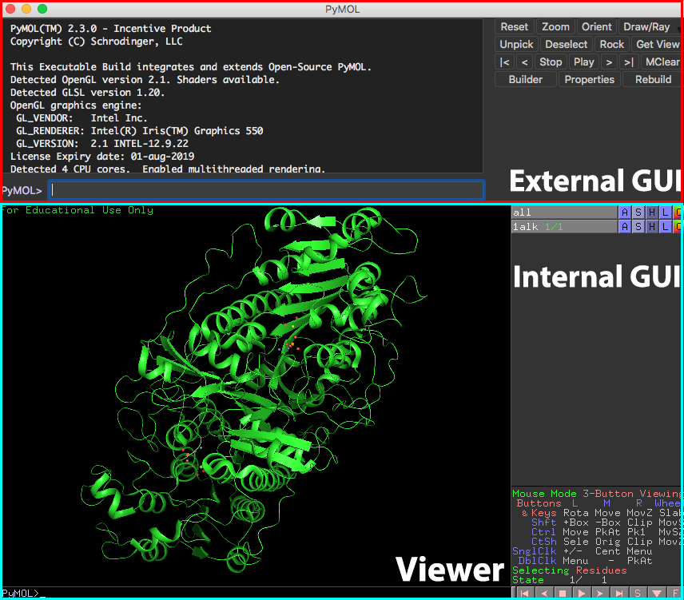
<h2 id="分子構造のロード"><a class="header" href="#分子構造のロード">分子構造のロード</a></h2>
<h3 id="構造ファイルのロード"><a class="header" href="#構造ファイルのロード">構造ファイルのロード</a></h3>
<p>メニュー左上の[File]から、[Open...]を選び、PyMOLに表示させたい構造ファイルを選択します。ここでは、先程ダウンロードした <code>1alk.cif</code> ファイルを例として、ダブルクリックして表示させてみます。</p>

<p>すると、画面に1ALKのアルカリフォスファターゼの構造が表示されました。はじめは黒背景に緑のタンパク質がオブジェクトが浮かんでいると思いますが、ここで続けて、メニューの[Display]から[Background]-&gt;[White]を選択すると、白背景にすることができます。</p>
<p><br>
</p>
<h3 id="サポートしている構造ファイル形式"><a class="header" href="#サポートしている構造ファイル形式">サポートしている構造ファイル形式</a></h3>
<p>PyMOLが読み込むことのできる構造ファイルフォーマットはたくさんありますが、まず以下の2つのファイル形式を覚えましょう。</p>
<ul>
<li>pdbフォーマット
<ul>
<li>ファイル名の最後に<code>.pdb</code>（<strong>拡張子</strong>）がついているのが目印です。PDBが設立された当初から使われているファイルフォーマットで、PyMOLの表示に使う座標情報だけでなく、結晶学（NMR）的情報（B-factor、 空間群、単位格子定数…）、 構造的特徴（2次構造、SS結合… ）、実験情報（解像度、回折実験情報、精密化条件、結晶化条件… ）、生物学的情報（蛋白質名、種名、生物学的単位、EC番号… ）、化学的情報（化合物の名称や構造…）、文献情報などが記載されており、慣れれば人間でも読みやすく、必要最低限の情報が記述されています。しかし、時代が下るとともにこのフォーマットでは限界や不便な点が指摘されるようになりました。特に、近年は結晶解析だけでなくクライオ電子顕微鏡などの技術の発達により、巨大タンパク質の構造決定が次々と報告されるようになりましたが、従来のPDBフォーマットの最も大きな問題点の1つには100,000原子以上からなる構造、または多数のアミノ酸鎖（63チェイン以上）から構成される複合体の構造情報の記述をほとんど想定していなかったことがあります。このため、後述の<strong>mmCIF</strong>形式の利用が推奨されるようになりました。</li>
</ul>
</li>
<li>mmCIFフォーマット
<ul>
<li>ファイル名の最後に<code>.cif</code>がついているのが目印です。元来、mmCIFファイルフォーマットは国際結晶学連合が低分子用に定めていたCIF(Crystallographic Information File)形式を高分子(macromolecular)に拡張したものです。pdbフォーマットでは1ファイル内に記述することができなかった、100,000原子数以上または63チェイン以上の構造記述が可能になっています。例えばPDB: 3J3QのHIV-1 capsidは超巨大分子であり、従来のPDBフォーマットでは配布されていません。<strong>2014年にPDBの標準フォーマットとなり、2019年7月1日からは、PDBに登録する際にmmCIF形式での構造情報登録を義務付けられるようになりました。</strong> このmmCIF形式がこれからのスタンダードとなっていくことは間違いありません。ファイルの中身はpdbフォーマットの内容の上位互換となっており、最近の構造可視化ソフトウェアはすべてこれに対応するよう調整をしています。</li>
</ul>
</li>
</ul>
<p>他のファイル形式として、以下のものがあります。多くの場合、ファイル名末尾についている拡張子で見分けることが可能です。詳細な記述文法については、ここでは本題ではないので省略します。</p>
<ul>
<li>生体高分子系・電子密度情報
<ul>
<li>
<p>CCP4フォーマット: 拡張子は<code>.ccp4</code>, <code>.map</code>, <code>.mrc</code>。電子密度マップ。</p>
</li>
<li>
<p>PDBMLフォーマット: 拡張子は<code>.xml</code>, <code>.pdbml</code>。コンピュータ間でのデータのやり取りや管理が簡単になるように設計された<strong>XMLファイルフォーマット</strong>をPDB用に特化させたものです。RCSB PDBでも配布されており、mmCIF形式とほぼ同一の情報が書き込まれています。ファイルサイズがmmCIFに比べて大きいことや、中身を見ても人間には読みにくい文法になっていますが、各プログラム言語が持っているXMLパーサ（構文解析器）にかけることでデータ構造の複合体に変換することが容易なため、インフォマティクスの専門家からは好まれるファイル形式です。</p>
</li>
<li>
<p>MMTFフォーマット: 拡張子は<code>.mmtf</code>。Macromolecular Transmission Formatの略称で、2016年頃から活発になり始めた<strong>新しいPDBファイル形式</strong>です。https://mmtf.rcsb.org/ によればMMTFの大きな特長はバイナリ化されていることであり、mmCIFフォーマットの1/3以下へのファイル縮小、そして最高で400倍以上の高速な読み込みが可能となっています。PyMOL 2.2.0以降でMMTFファイルフォーマットの読み込み・書き出しができるようになったようですが、まだ書き出しあたりには不十分なところもあります。これはViral Capsid（PDB: 3J3Q）のような超巨大タンパク質の表示にとても便利です。</p>
</li>
<li>
<p>MacroModelフォーマット: 拡張子は<code>.mmod</code>, <code>.mmd</code>。Schrödinger社のMacroModelやMaestroで使われているファイルフォーマット。</p>
</li>
</ul>
</li>
<li>小分子化合物系
<ul>
<li>MOLフォーマット: 拡張子は<code>.mol</code>。MDL Information Systems社が開発した、化学構造式を記述する標準フォーマットの1つです。詳細はCTFile formatというガイドに記載されています。</li>
<li>MOL Structure Data Fileフォーマット: 拡張子は<code>.sdf</code>。上記MOL形式を改良し、複数の構造式を1ファイルに記述でき、さらに様々な付加情報を追記することができるようになっています。</li>
<li>SYBYL MOL2フォーマット: 拡張子は<code>.mol2</code>。Tripos（現Certara）が開発した、SYBYLと呼ばれるケモインフォマティクスのソフトウェアで使われていたファイルフォーマットです。タンパク質などの巨大分子でもこのファイル形式で書くことが可能です。詳細はSYBYL MOL2 formatというガイドに記載されています。</li>
<li>XYZフォーマット: 拡張子は<code>.xyz</code>。単純に原子の種類と原子の\( xyz \)座標を記述するファイル形式です。http://openbabel.org/wiki/XYZ_(format) に説明があります。</li>
</ul>
</li>
</ul>
<p>以下の拡張子は、表のように別のファイル拡張子として認識されます。</p>
<table><thead><tr><th align="right">入力拡張子</th><th align="right">認識されるファイル拡張子</th></tr></thead><tbody>
<tr><td align="right"><code>ent</code>, <code>p5m</code></td><td align="right"><code>pdb</code></td></tr>
<tr><td align="right"><code>mmd</code>, <code>out</code>, <code>dat</code></td><td align="right"><code>mmod</code></td></tr>
<tr><td align="right"><code>map</code>, <code>mrc</code></td><td align="right"><code>ccp4</code></td></tr>
<tr><td align="right"><code>cc2</code></td><td align="right"><code>cc1</code></td></tr>
<tr><td align="right"><code>sd</code></td><td align="right"><code>sdf</code></td></tr>
<tr><td align="right"><code>rst7</code></td><td align="right"><code>rst</code></td></tr>
<tr><td align="right"><code>o</code>, <code>dsn6</code>, <code>omap</code></td><td align="right"><code>brix</code></td></tr>
<tr><td align="right"><code>ph4</code></td><td align="right"><code>moe</code></td></tr>
<tr><td align="right"><code>spi</code></td><td align="right"><code>spider</code></td></tr>
<tr><td align="right"><code>pym</code>, <code>pyc</code></td><td align="right"><code>py</code></td></tr>
<tr><td align="right"><code>p1m</code>, <code>pim</code></td><td align="right"><code>pml</code></td></tr>
<tr><td align="right"><code>xml</code></td><td align="right"><code>pdbml</code></td></tr>
</tbody></table>
<h3 id="biological-unitを考慮した分子構造のロード"><a class="header" href="#biological-unitを考慮した分子構造のロード">Biological Unitを考慮した分子構造のロード</a></h3>
<p>タンパク質は1本のアミノ酸ポリペプチド鎖が折り畳まって存在しているのがほとんどですが、タンパク質の種類によっては、多量体の形で初めて安定に存在し機能しうるものもあります。<strong>Biological Unit</strong>（Biological Assemblyとも呼ばれる）とは、実際に生物の中で機能している構造の状態のことを指します。詳しくはPDBjのウェブサイトの「<a href="https://pdbj.org/help/pdb_aubu">非対称単位と生物学的単位について</a>」も参照してください。</p>
<p>例として<code>PDB ID: 1ALK</code>（大腸菌由来アルカリフォスファターゼ）と<code>PDB ID: 1EW2</code>（ヒト由来アルカリフォスファターゼ）を比較してみましょう。各構造ファイルを取り扱うRCSB PDBのウェブサイト（ https://www.rcsb.org/structure/1ALK と https://www.rcsb.org/structure/1EW2 ）のStructure Summaryタブで画面左の方には、タンパク質の構造とともに、Global SymmetryとGlobal Stoichiometryの情報が書かれています。</p>

<p>Global Stoichiometryには<code>Homo 2-mer - A2</code>という情報が記されています。論文で調べてみても、このタンパク質がそれぞれホモ2量体として生物中で機能していることが示されています。しかしそれぞれのファイルをPyMOLで単純に開いてみますと、1ALKの方にはA chain、B chainの構造が含まれていますが、1EW2の方ではA chainしか含まれていません。これは、<strong>PDBに登録されている原子座標のデータには、必要最小限の「非対称単位」(assymmetric unit)のみ含まれているから</strong> です。</p>
<p>そこで、場合によっては2量体の状態でタンパク質構造を表示してみたいということがあると思います。PyMOL 1.8からはこのBiological Unitを考慮した構造のロードが簡単に行えるようになりましたので、それを<code>1EW2</code>ファイルに対してやってみます。以下の画像のように、[File]-&gt;[Get PDB...]を選び、続くウィンドウの画面でIDとAssembly情報を入力します。</p>
<p><br>
</p>
<p>これにより、1EW2の構造がホモ2量体構造で表示されました。</p>

<p>このチェインを別々に扱うためには、右側のオブジェクトパネルから<code>1EW2A</code>のAボタンをクリックし、[state] -&gt; [split]を開いてクリックします。</p>

<p>すると、<code>1EW2A_0001</code>, <code>1EW2A_0002</code>というオブジェクトが新たに生成されます。ここまでくれば<code>1EW2A</code>オブジェクトは不要ですので、最後に<code>1EW2A</code>のAボタンから[delete object]を押せば完了です。</p>

<p>以上がBiological Unitを考慮した分子構造のロード操作ですが、これは一例であり、他にも同等の操作を達成する方法があります。コマンドラインで上記の操作を達成するには</p>
<pre><code>set assembly, 1
fetch 1ew2
split_states 1ew2
delete 1ew2
</code></pre>
<p>でOKです。タイピングが早ければこちらの方が素早くできるでしょう。<code>set assembly, 1</code>に相当する設定変更は、上部メニューの[Setting] -&gt; [mmCIF File Loading] -&gt; [Load Assembly (Biological Unit)]にチェックを入れることでも可能です。</p>
<h2 id="配列の表示"><a class="header" href="#配列の表示">配列の表示</a></h2>
<p>分子構造をロードしたら、ここでPyMOL画面の右下に注目してみます。ここには様々な記号や文字が並んでいますが、ここのSボタンを押してみましょう。</p>

<p>このSボタンを押すと、画面に分子の配列情報が現れます。もう一度Sボタンを押すと文字列が隠れます。</p>
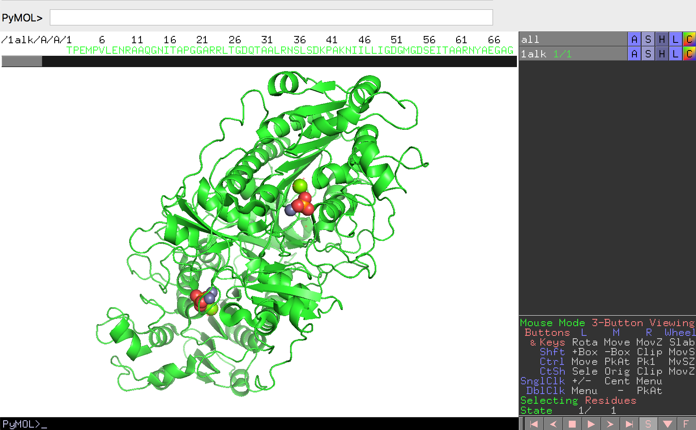
<p>ここに表示される配列の文字列は、タンパク質の場合にはA, C, Dなどアミノ酸の1文字表記、核酸構造の場合にはDA, DT, DG, DCで2文字表記となっています。RNAの場合には1文字表記ですが、タンパク質の場合と異なり、各文字にスペースが挿入されて表示されます。リガンドやその他のについては3文字表記で表されることが多いです。これらの表記は、ロードする構造ファイル内の記述に依存してします。</p>
<p>配列の表示・非表示は、上部メニューの[Display]→[Sequence]にチェックを入れたり外したりすることでも行うことができます。</p>
<p>以下に、配列表示ウィンドウ上でのマウス操作を方法を記します。macOSの場合はCtrlはCmdキーになります。</p>
<ul>
<li><strong>左クリック＋ドラッグ</strong>
<ul>
<li>分子の一部を選択した状態にできます。選択した箇所にはハイライトが付きます。タンパク質の場合は残基ごと、核酸の場合は塩基ごと、それ以外の場合は1分子ごとに選択します。</li>
</ul>
</li>
<li><strong>Shift+左クリック</strong>
<ul>
<li>上記の選択範囲を拡張・縮小することができます。クリックボタンを押し続ける必要はありません。</li>
</ul>
</li>
<li><strong>Ctrl+Shift+左クリック</strong>
<ul>
<li>選択範囲を拡張・縮小しつつ、視点を選択範囲にセンタリングしてくれます。</li>
</ul>
</li>
<li><strong>ホイールクリック</strong>
<ul>
<li>クリックした箇所に視点をセンタリングします。</li>
</ul>
</li>
<li><strong>Ctrl+ホイールクリック</strong>
<ul>
<li>クリックした箇所に視点を大きくズームします。</li>
</ul>
</li>
<li><strong>Ctrl+ホイールクリック+Shift+ドラッグ</strong>
<ul>
<li>Shift+ドラッグで選んだ選択範囲に向かって視点を大きくズームします。</li>
</ul>
</li>
<li><strong>右クリック</strong>
<ul>
<li>選択されていない箇所で右クリックをすると、その位置に存在する配列を選択し、それについての設定変更メニューを表示します。</li>
<li>すでに選択されている箇所で右クリックをすると、選択範囲に対する設定変更メニューを表示します。</li>
</ul>
</li>
</ul>
<h2 id="オブジェクトパネル"><a class="header" href="#オブジェクトパネル">オブジェクトパネル</a></h2>
<p>PyMOL画面の右側には、ロードしている分子構造について様々な操作を行えるパネルが表示されています。</p>

<p>画像の例では<code>all</code>と<code>1alk</code>が表示されています。また、画面上の分子構造をクリックし選択すると、<code>(sele)</code>という表示も追加されます。このパネルに表示されている文字のことを<strong>オブジェクト</strong>と呼びます。その右についているA, S, H, L, Cという文字のボタンには、対応するオブジェクトについての表示設定変更・編集を行うためのメニューがたくさん格納されています。それぞれの文字が表す大まかな意味は以下の通り。</p>
<ul>
<li><strong>Action(A)</strong>
<ul>
<li>視点の移動や分子についての編集、一括設定変更、構造のアラインや名前変更など、オブジェクト全体に関わる様々な設定を行うためのメニューが格納されています。</li>
</ul>
</li>
<li><strong>Show (S)</strong>
<ul>
<li>分子構造の表示形式をONにするためのメニューが格納されています。</li>
</ul>
</li>
<li><strong>Hide (H)</strong>
<ul>
<li>分子構造の表示形式をOFFにするためのメニューが格納されています。</li>
</ul>
</li>
<li><strong>Label (L)</strong>
<ul>
<li>分子構造のすぐそばに表示する文字ラベルを追加するためのメニューが格納されています。</li>
</ul>
</li>
<li><strong>Color (C)</strong>
<ul>
<li>分子構造の色変更を行うためのメニューが格納されています。</li>
</ul>
</li>
</ul>
<h2 id="分子構造の表示形式のonoff-show-and-hide"><a class="header" href="#分子構造の表示形式のonoff-show-and-hide">分子構造の表示形式のON/OFF (Show and Hide)</a></h2>
<p>タンパク質の構造情報をロードしたとき、デフォルト設定では、20種類のアミノ酸についてはCartoon表示形式と呼ばれる漫画風な表現形式になっています。このCartoon表示形式では、αヘリックスを形成している部分については大きな螺旋で描かれ、βストランド（βシート）を形成している部分については、進行方向に向かって矢印が伸びる表現で描かれています。</p>
<p>タンパク質を構成するアミノ酸を1つ1つ強調して見てみたい場合には、<strong>Cartoon</strong>, <strong>Line</strong>, <strong>Stick</strong>, <strong>Ribbon</strong>, <strong>Sphere</strong>, <strong>Dot</strong>, <strong>Surface</strong>, <strong>Mesh</strong> 表示などの、他の表示形式をONにするという操作を行います。この表示形式の設定は、各オブジェクト構造について個別に行います。例えば、先程ロードした1alkのタンパク質オブジェクトについて他の表示形式をONにしたい場合は、図のように、1alkの<strong>Sマーク部分（図の赤四角部分のボタン）</strong> をクリックします。反対に、OFFにしたい場合は<strong>Hマーク部分（図の青四角部分のボタン）</strong> を押し、各表示形式を選択することでOFFになります。</p>
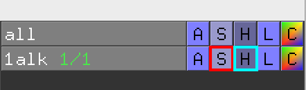
<p>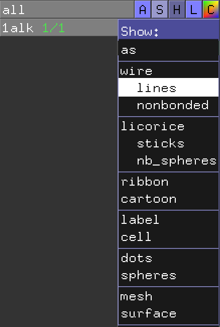<br></p>
<!--
set_view (\
     0.990649223,   -0.127824500,    0.047657397,\
     0.136341795,    0.915909708,   -0.377514422,\
     0.004605473,    0.380482703,    0.924775600,\
    -0.000116501,   -0.000019159,  -50.788997650,\
    29.517896652,    2.209085464,   19.883510590,\
     0.894756913,  100.680503845,  -20.000000000 )
-->
<p>各表示形式のサンプルを以下に示します。</p>
<ul>
<li>
<p><strong>Cartoon表示</strong></p>
<ul>
<li>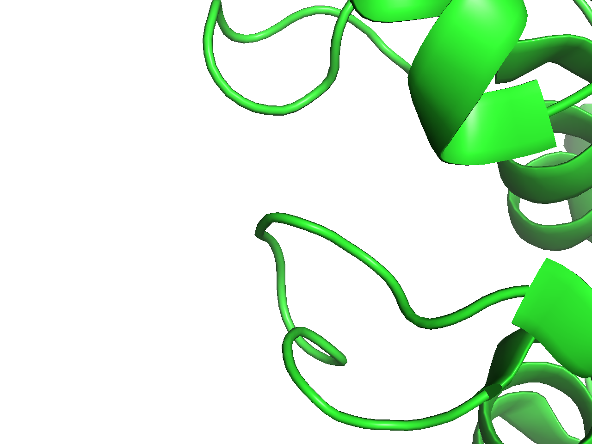
</li>
<li>タンパク質やDNA・RNAを表示するときにおすすめです。タンパク質の場合はαヘリックスやβシートが先述のように螺旋や矢印で示されます。DNA/RNAが存在する場合には、各塩基の概形や5'末端→3'末端のつながりが強調して表示されます。</li>
</ul>
</li>
<li>
<p><strong>Line表示</strong></p>
<ul>
<li>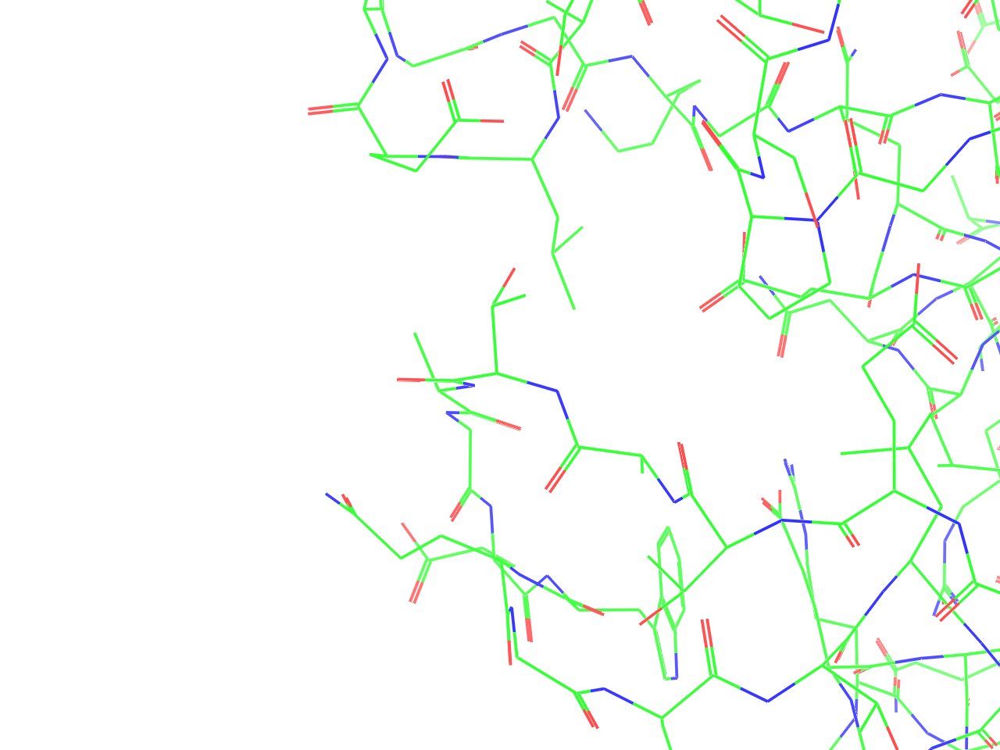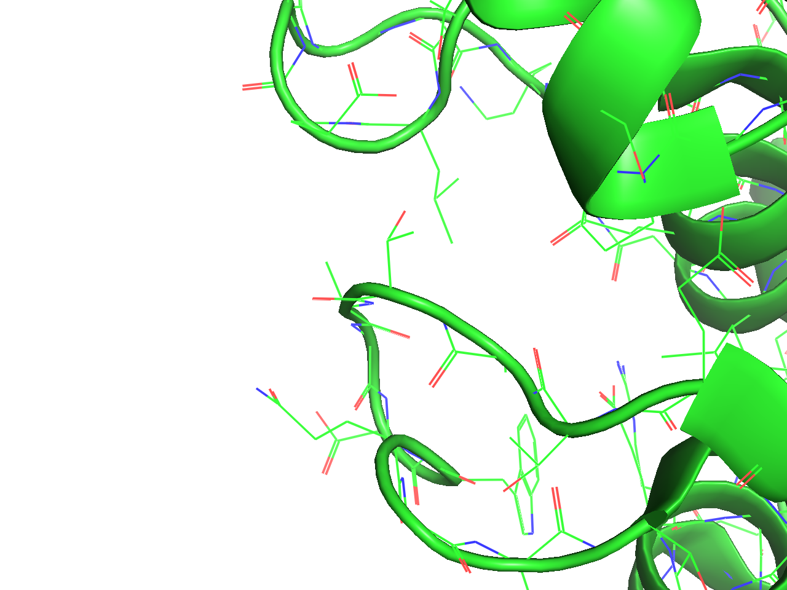<br></li>
<li>各原子間の結合が細い線で表示されます。上の図では、左にLine表示だけをONにしたものを、右にCartoon表示形式をLine表示とともにONにした場合を右図に示しています（以降、見やすくするためにCartoon表示をONにした上で、他の表示形式を載せます）。</li>
<li>各原子は構造情報ファイルの座標のATOMまたはHETATMレコードに書かれている座標情報（\( x, y, z \)の3次元ベクトル）をもとにプロットされ、各原子座標の距離が一定以内にあれば、自動的にその近い2点が直線で結ばれて表示される仕様となっていることに気をつけてください。</li>
</ul>
</li>
<li>
<p><strong>Stick表示</strong></p>
<ul>
<li><br></li>
<li>各原子間の結合がLine表示よりも太いStickで表示されます。Stickは円筒状に表現されます。</li>
</ul>
</li>
<li>
<p><strong>Ribbon表示</strong></p>
<ul>
<li>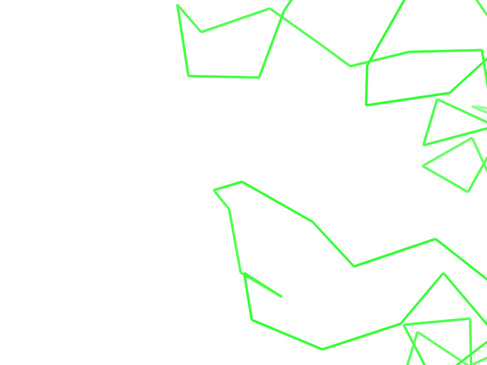<br></li>
<li>タンパク質または核酸の鎖部分のみを単純な線で表現する形式です。</li>
</ul>
</li>
<li>
<p><strong>Sphere表示</strong></p>
<ul>
<li>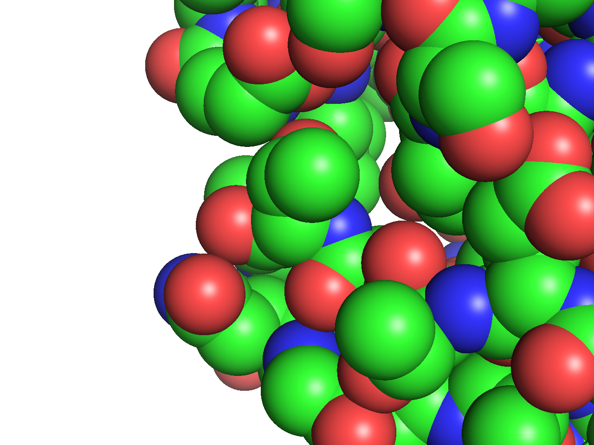<br></li>
<li>各原子を大きな球体で表現します。Line, Stick表示と異なり、各原子間は直線で結ばれません。</li>
</ul>
</li>
<li>
<p><strong>Dot表示</strong></p>
<ul>
<li>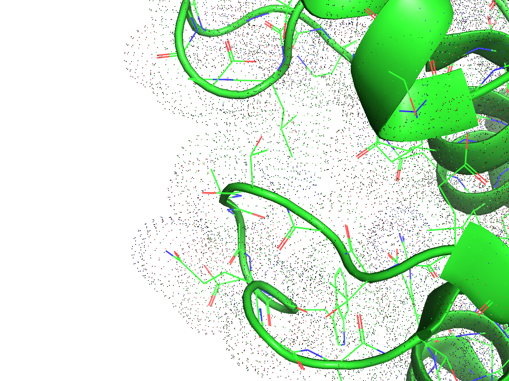<br></li>
<li>Sphere表示の表面を点で表現したような形式です。</li>
</ul>
</li>
<li>
<p><strong>Surface表示</strong></p>
<ul>
<li>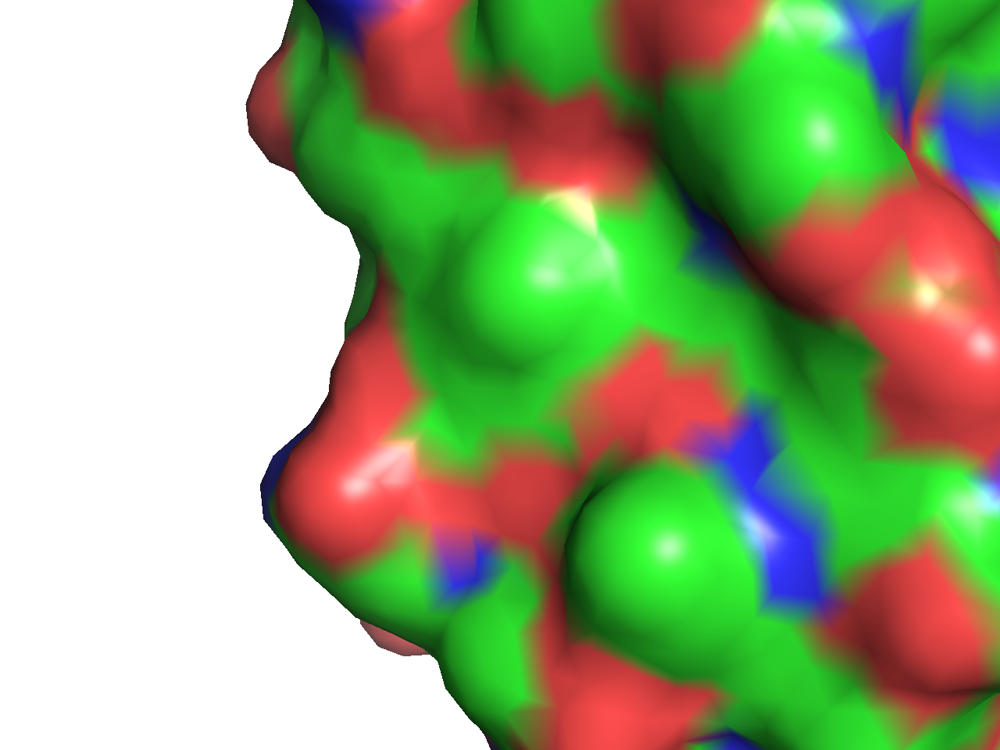<br></li>
<li>各原子の表面を滑らかに描画する形式です。分子の大きさによっては、レンダリングに少し時間がかかります。</li>
</ul>
</li>
<li>
<p><strong>Mesh表示</strong></p>
<ul>
<li>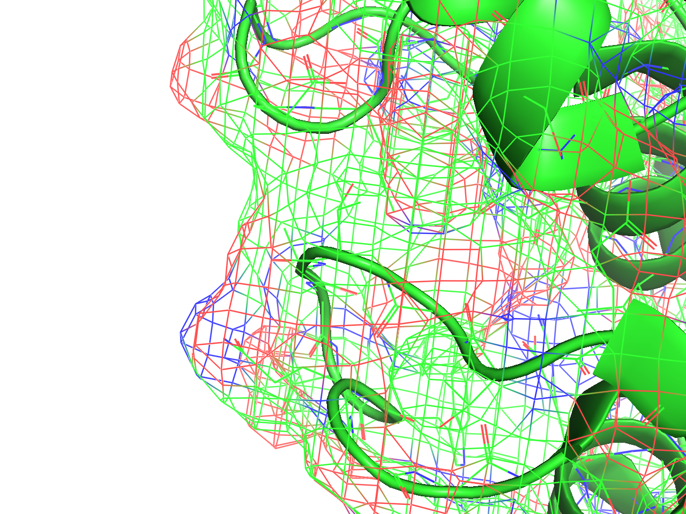<br></li>
<li>Surface表示と似ていますが、表面の描画を網掛けで表現します。</li>
</ul>
</li>
</ul>
<h2 id="ラベルの設定label"><a class="header" href="#ラベルの設定label">ラベルの設定(Label)</a></h2>
<p><strong>ラベル</strong>を利用することで、分子の周辺に文字を表示させることができます。活性部位周辺に存在する残基の名前と番号を表示させるだけでなく、任意の文字列を表示させることができます。</p>
<p><br></p>
<p><a href="./showandhide.html">分子構造の表示形式のON/OFF (Show and Hide)</a>のときと同様に、オブジェクトパネルから各オブジェクトに対して個別にラベルの設定を行うことができます。特に、選択範囲<code>(sele)</code>に対して表示させることが多いでしょう。</p>

<p><strong>ラベルの設定変更</strong>はGUIの上部メニューから、Setting -&gt; Labelのところにあり、ラベルの表示サイズやフォント指定、色の指定などが可能です。下記のサンプルではフォントサイズを28にしてあります。</p>
<p><strong>ラベルの位置変更</strong>は3-Button Editing Modeにしてから、ラベルの上でCtrl(macOSの場合はCommand)を押しながら左クリックでドラッグさせることで任意の位置に移動させることができます。下の例ではASP-101を右に移動させています。</p>


<h3 id="clear"><a class="header" href="#clear">clear</a></h3>
<p>すでに表示されているそのオブジェクトについてのラベル表示を消去します。消去するのではなく表示を一時的に場合は、Hideメニューからlabelを選択しましょう。</p>
<hr>
<h3 id="residues"><a class="header" href="#residues">residues</a></h3>
<p>選択されたオブジェクトについて、アミノ酸と残基番号の情報を<code>（アミノ酸3文字表記）-（残基番号）</code>の形で表示します(例：MET-1)。Cα原子の上に表示される設定になっています。</p>

<h3 id="residues-one-letter"><a class="header" href="#residues-one-letter">residues (one letter)</a></h3>
<p>選択されたオブジェクトについて、アミノ酸と残基番号の情報を<code>（アミノ酸1文字表記）（残基番号）</code>の形で表示します(例：M1)。Cα原子の上に表示される設定になっています。</p>

<h3 id="chains"><a class="header" href="#chains">chains</a></h3>
<p>選択されたオブジェクトのN末端とC末端の番号を持つ残基（リガンドが存在する場合、それも含む）のそばに<code>chain &lt;chain ID&gt;</code>の形で表示します（例： chain A）。</p>

<h3 id="segments"><a class="header" href="#segments">segments</a></h3>
<p>すでに使用が廃止されたsegment identifierの情報を、chainsと同様に表示します。詳しくは<a href="../append01/term.html#%E3%82%BB%E3%82%B0%E3%83%A1%E3%83%B3%E3%83%88segment-identifier">Appendix: 用語#セグメント</a>を参照してください。今となってはあまり使うことはないと思います。</p>
<hr>
<h3 id="atom-name"><a class="header" href="#atom-name">atom name</a></h3>
<p>原子名の名前でラベルを作成します。<code>.pdb</code>形式ファイルの場合、<code>ATOM</code>, <code>HETATM</code>レコードの13-16列目に含まれる文字列がatom nameとして定義されており、この文字列を返します。</p>

<p>タンパク質アミノ酸やDNA, RNAの場合は命名規則があるため、慣れてしまえばatom nameの意味を理解しやすいと思います。13-14列目には右詰めで原子名を表します。例えば鉄原子は13-14列目を使ってFEの文字が入っていますが、炭素原子は14列目にCの文字を入れ、13列目は空白となっています。しかし、水素原子の場合は13-16列目の4文字分を最大限使って記述する場合があり、この場合は13列目から記入することになっています。</p>
<p>以下ではよく登場するatom nameの一例です。</p>
<table><thead><tr><th align="right">atom name</th><th align="right">意味</th></tr></thead><tbody>
<tr><td align="right">CA</td><td align="right">主鎖のα位の炭素</td></tr>
<tr><td align="right">N</td><td align="right">主鎖のN末端側窒素原子</td></tr>
<tr><td align="right">C</td><td align="right">主鎖のC末端側炭素原子</td></tr>
<tr><td align="right">O</td><td align="right">主鎖のC末端側酸素原子</td></tr>
<tr><td align="right">CB</td><td align="right">側鎖のβ位の炭素</td></tr>
<tr><td align="right">CG</td><td align="right">側鎖のγ位の炭素</td></tr>
<tr><td align="right">CD</td><td align="right">側鎖のδ位の炭素</td></tr>
<tr><td align="right">CE</td><td align="right">側鎖のε位の炭素</td></tr>
<tr><td align="right">CZ</td><td align="right">側鎖のζ位の炭素（チロシンなど）</td></tr>
<tr><td align="right">OH</td><td align="right">側鎖のη位の炭素（チロシンなど）</td></tr>
</tbody></table>
<p>主鎖に近い原子の個数順にβ→γ→δ→ε→ζ→ηと付ける命名規則があります。複数原子が存在するようなアミノ酸（ヒスチジン）などはND1, CD1, CE2, NE2というふうに番号をつけて区別します。</p>
<h3 id="element-symbol"><a class="header" href="#element-symbol">element symbol</a></h3>
<p>原子名を表記します。</p>

<h3 id="residue-name"><a class="header" href="#residue-name">residue name</a></h3>
<p>3文字表記の残基名を表記します。<code>.pdb</code>ファイル形式における<code>ATOM</code>, <code>HETATM</code>レコードの18-20列目の文字列を返します。存在しない場合は空白になります（以下同様）。</p>

<h3 id="one-letter-code"><a class="header" href="#one-letter-code">one letter code</a></h3>
<p>1文字表記の残基名を表記します。</p>

<h3 id="residue-identifier"><a class="header" href="#residue-identifier">residue identifier</a></h3>
<p>残基のresidue IDを表記します。<code>.pdb</code>ファイル形式における<code>ATOM</code>, <code>HETATM</code>レコードの23-26列目の文字列を返します。</p>

<h3 id="chain-identifier"><a class="header" href="#chain-identifier">chain identifier</a></h3>
<p>残基のChain IDを表記します。<code>.pdb</code>ファイル形式における<code>ATOM</code>, <code>HETATM</code>レコードの22列目の文字列を返します。</p>

<h3 id="segment-identifier"><a class="header" href="#segment-identifier">segment identifier</a></h3>
<p>残基のSegment IDを表記します。詳しくは<a href="../append01/term.html#%E3%82%BB%E3%82%B0%E3%83%A1%E3%83%B3%E3%83%88segment-identifier">Appendix: 用語#セグメント</a>を参照してください。</p>
<hr>
<h3 id="b-factor"><a class="header" href="#b-factor">b-factor</a></h3>
<p>各原子の温度因子（b-factor; temperature facotr）を表記します。<code>.pdb</code>ファイル形式における61-66列目の文字列を返します。</p>

<h3 id="occupancy"><a class="header" href="#occupancy">occupancy</a></h3>
<p>各原子の重み因子を表記します。<code>.pdb</code>ファイル形式における55-60列目の文字列を返します。結晶中では基本的に構造は繰り返しになるため、どの場所を見ても同じ座標がループしている事が多く、この値は<code>1.00</code>であることが多いのですが、時々その繰り返し構造単位の中に、1より大きなn通りの配座を持っていることがあります。このとき、ここには0~1の小数値が入ります。例としては PDB: 1A6MのGLN-8が<code>0.57</code>, <code>0.43</code>の値を持つ2通りの配座を持ち、同様にTYR-151も<code>0.50</code>, <code>0.50</code>で2通りの配座を持っています。この場合、PyMOLの表示上でも2通りの残基配座が見えます。画像はPDB: 1A6MのGLN-8の例を示しています。</p>

<h3 id="vdw-radius"><a class="header" href="#vdw-radius">vdw radius</a></h3>
<p>各原子のファンデルワールス半径の値（Å）を表記します。基本的には原子の種類によって固定の値です。</p>

<hr>
<h3 id="other-properties"><a class="header" href="#other-properties">Other properties</a></h3>
<h4 id="formal-charge"><a class="header" href="#formal-charge">formal charge</a></h4>
<p>各残基についてシステムで定義されている電荷を表記します。例としてLys, Arg残基の場合は<code>+1</code>を、Glu, Asp残基の場合には<code>-1</code>を表示します。</p>

<h4 id="partial-charge"><a class="header" href="#partial-charge">partial charge</a></h4>
<p>各原子について計算された部分電荷(partial charge)を表記します。これは通常の<code>pdb</code>, <code>mmCIF</code>といった構造ファイルには含まれていないため、<code>0.00</code>と表示されてしまいますが、<code>pqr</code>や<code>mol2</code>ファイル形式をロードしたときに真価を発揮します。</p>
<p>タンパク質構造の場合は構造ファイルをいったんロードした後、<a href="../ch04/apbs.html">APBSプラグインを使った表面電荷表示</a>の手順に従って処理を進めます。このときにオブジェクトパネルに<code>run01</code>-&gt;<code>prepared01</code>というオブジェクトが生成されるので、<code>prepared01</code>オブジェクトのラベル設定でpartial chargeを選択すると図のように部分電荷が表示されるようになります。</p>

<p>より正確に言えば、これはPDB2PQRというソフトウェアによって分子動力学シミュレーションソフトウェアAMBERが配布している力場AmberFFに基づいて指定されており、各アミノ酸の原子ごとに固有の値を指定してくれます。</p>
<p>実態としてはPQRファイルの記述様式にのっとり、x, y, z座標の次にくるchargeの値を表記しています。</p>
<blockquote>
<p>参考：<a href="https://www.mdanalysis.org/docs/documentation_pages/coordinates/PQR.html">6.15. PQR file format</a></p>
</blockquote>
<p>mol2形式の場合でも対応しています。</p>

<p>GaussianやGAMESSなどの量子化学計算ソフトウェアで計算した部分電荷を図にして見てみたいときに特に有効です。</p>
<h4 id="elec-radius"><a class="header" href="#elec-radius">elec. radius</a></h4>
<p>partial chargeのときと同様に、PQRファイルのオブジェクトの場合に効果を発揮します。PQRファイル内のx, y, z座標, chargeの次にくるradiusの値を表記しています。vdw radiusとは異なります。</p>

<h4 id="text-type-numeric-type"><a class="header" href="#text-type-numeric-type">text type, numeric type</a></h4>
<p>PyMOL 2.0以降は廃止されているらしく、使われていないようです（詳細不明）</p>
<h4 id="stereochemistry"><a class="header" href="#stereochemistry">stereochemistry</a></h4>
<p>PyMOL 2.2から実装されました。schrodingerのソフトまたはrdkitモジュールのインストールが求められるようです。不斉炭素原子の部分にラベルを置いてくれる機能？</p>
<hr>
<h3 id="atom-identifiers"><a class="header" href="#atom-identifiers">atom identifiers</a></h3>
<h4 id="rank"><a class="header" href="#rank">rank</a></h4>
<p>rankを表記します。rankとは構造ファイルの上から順に<code>ATOM</code>, <code>HETATM</code>レコードを取得したときの通し番号のことであり、これのみ<strong>0始まり</strong>となっています。</p>

<blockquote>
<p>“rank” selects atoms based on their position in the source file, starting with zero as the first number.</p>
</blockquote>
<h4 id="id"><a class="header" href="#id">ID</a></h4>
<p>IDを表記します。IDとは構造ファイルから忠実に取得したATOM IDのことであり、<code>pdb</code>ファイルフォーマットで言えば7-11列目に存在する番号のことを指します。この値は整数値でなければなりません。</p>

<blockquote>
<p>“id” selects atoms based on the atom identifier number from the source file, which must be a integer.</p>
</blockquote>
<h4 id="index"><a class="header" href="#index">index</a></h4>
<p>Indexを表記します。indexはrankと似ていますが、順に表示するのとは異なり、PyMOL内部で番号を順に振り直したのがindexです。例えばある1つのアミノ酸残基があったとき、その残基の中で登場する原子の順番をどのように入れ替えても、index表記ではN→CA→C→O→CB→……の順に若い数字を付けていきます。</p>

<blockquote>
<p>“index” selects atoms based on their internal PyMOL object atom indices starting with one as the first number.</p>
</blockquote>
<h2 id="色の設定color"><a class="header" href="#色の設定color">色の設定(Color)</a></h2>

<p>色の設定の仕方は自由です、センスの見せ所です……とは言うものの、<strong>実はタンパク質の構造を毎日見るであろう構造生物学専門の研究者さんにとっては、ある暗黙の了解があります</strong>。それらを踏まえた上で、PyMOLのカラーリング機能を紹介していきましょう。</p>
<h3 id="色設定の暗黙の了解"><a class="header" href="#色設定の暗黙の了解">色設定の暗黙の了解</a></h3>
<p>以下のルールだけは遵守しましょう。</p>
<ul>
<li>常に<strong>酸素原子は<span style="color:red;">赤</span>色, 窒素原子は<span style="color:blue;">青</span>色, 硫黄原子は<span style="color:#E7C640;">オリーブ（olive）</span>色</strong>で表示する。</li>
<li>存在する場合、水素原子は白色で表示。</li>
<li>よって炭素原子は、<strong>上記以外の色</strong>を使う。</li>
</ul>
<p>メチオニン残基の表示の例（炭素原子はgreen）</p>

<p>PyMOLには、酸素・窒素・窒素・水素原子を上記の色ルールで描画してくれるメニュー（&quot;<strong>by element</strong>&quot;）が存在しますので、これを使うことを強く推奨します。</p>
<p>正確には、PyMOLでは酸素原子はカラーコードで#FF7C7C (255, 76, 76) [1.0, 0.3, 0.3], 窒素原子は#3333FF (51,51,255) [0.2, 0.2, 1.0], 硫黄原子は#E7C640 (231, 198, 64) [0.9, 0.775, 0.25]がデフォルトで割り当てられているため、用意されているカラーパレットを使う限りにはこれらの色と完全にかぶることはないのですが、それでもこれらに近い色を使うと紛らわしいので、使用は控えましょう。また、以下で見るように、用意されているカラーパレットの中にはすべての原子を同一で塗るものもあるので、どうしてもそれらの色を使いたい場合は、そのカラーパレットを選択した後に&quot;<strong>by element</strong>&quot;メニューの一番上のカラーリング（通称&quot;color by hetetoatom&quot;）を選択してあげましょう。</p>
<h3 id="by-element"><a class="header" href="#by-element">by element</a></h3>
<p>メニューを開いていただけると一目瞭然、C（炭素）の色だけが変わっており、H, N, O, S, 他にも様々な原子について、「暗黙の了解」の色で固定されています。反対に炭素原子の色を自由に選べることで、多量体タンパク質や大きな複合体に対しても自由に色を塗り分けられることができます。<strong>基本的には、このカラーパレットから選びましょう</strong>。</p>
<p>見落としがちですが、下の方にある<strong>set 2</strong>〜<strong>set 6</strong>にも、様々な色が用意されています。set 6のみ水素原子の色が白色でないものが用意されていますが、あまり使うことはないでしょう。</p>
<p>一番上のメニューではCが表示されておらず、HNOSと書かれていますが、これは<strong>炭素以外の原子の色を既定色に変更する</strong>というとても便利なカラーパレットです（&quot;color by heteroatom&quot;）。</p>
<p>コマンド入力はこちら(オブジェクト<code>1alk</code>について行う場合)</p>
<pre><code>util.cnc 1alk # color by heteroatom
</code></pre>
<h3 id="by-chain"><a class="header" href="#by-chain">by chain</a></h3>
<h4 id="by-chain-elem-c--ca--無印"><a class="header" href="#by-chain-elem-c--ca--無印">by chain (elem C | */CA, | 無印)</a></h4>
<p>`1つの生体分子オブジェクト内に複数のchainが存在している場合、各chainごとに異なる色で塗り分けてくれます。</p>

<p><code>elem C</code>の場合、チェイン内の全炭素原子に対して色の変更を行い、他の種類の原子には色の変更を行いません。<code>*/CA</code> の場合、主鎖のCα原子のみ色の変更を行い、残りの原子には色の変更を行いません。<code>無印</code>は全原子に対して色の変更を行います。</p>
<p>コマンド入力はこちら(オブジェクト<code>1alk</code>について行う場合)</p>
<pre><code>util.color_chains(&quot;(1alk and elem C)&quot;) # elem C
util.color_chains(&quot;(1alk and name CA)&quot;) # */CA
util.color_chains(&quot;(1alk)&quot;) # 無印
</code></pre>
<h4 id="chainbows"><a class="header" href="#chainbows">chainbows</a></h4>
<p><strong>各chainについて</strong>、N末端（5'末端）からC末端（3'末端）にかけて青色から赤色のきれいなグラデーションができるように色を塗り分けてくれます。タンパク質の場合、この配色ならば、<strong>表示された色からアミノ酸配列の位置と構造上での位置の対応関係を把握しやすい</strong>ため、この配色になっている論文を見たことがある方も多いでしょう。</p>

<p>コマンド入力はこちら(オブジェクト<code>1alk</code>について行う場合)</p>
<pre><code># どちらでもOK
util.chainbow 1alk
util.chainbow(&quot;(1alk)&quot;)
</code></pre>
<h4 id="by-segi-elem-c--無印"><a class="header" href="#by-segi-elem-c--無印">by segi (elem C | 無印)</a></h4>
<p>segment identifierによる色分けを行います。</p>

<p>あまり詳しく調べていないのですが、segment identifierは現在仕様が廃止されつつあるのと、カラーリングが赤・青なので、あまり使うことはないでしょう。</p>
<h3 id="by-ss-by-secondary-structure"><a class="header" href="#by-ss-by-secondary-structure">by ss (By Secondary Structure)</a></h3>
<p>タンパク質の二次構造（ヘリックス・シート・ループ）構造を基準に色分けしてくれます。自由に選びましょう。</p>

<p>コマンドで行う場合で、ヘリックスを赤、シートを黄、それ以外を緑に塗りたいときは、以下のように打てばOKです。</p>
<pre><code>color red, ss h
color yellow, ss s
color green, ss l+''
</code></pre>
<p>または、</p>
<pre><code>util.cbss(&quot;1alk&quot;,&quot;red&quot;,&quot;yellow&quot;,&quot;green&quot;) # オブジェクト1alkについて行いたい場合
</code></pre>
<h3 id="by-rep-by-representation"><a class="header" href="#by-rep-by-representation">by rep (By Representation)</a></h3>
<p>表示形式(representation)ごとに色分けを表示させることができます。これ以外の他のメニューからの色変更は、全表示形式が一括で色変更されてしまうので、うまく使い分けましょう。例えば、by chainで緑・青に色分けをした後に[show]→[surface]としてsurface表示をした状態ですと、</p>

<p>という表示になりますが（コマンドで<code>set transparency, 0.5</code>とし、Surface表示の透明度を変更しています。）、続いて[by rep]→[surface]→[grays]→[white]とすると</p>

<p>このようにSurface表示だけ白くすることができます。</p>
<p>コマンド入力はこちら(オブジェクト<code>1alk</code>について行う場合)</p>
<pre><code># どちらでもOK
set surface_color, white, 1alk
cmd.set(&quot;surface_color&quot;, &quot;white&quot;, '1alk', quiet=0)
</code></pre>
<p><code>quiet=1</code> とすると処理終了時にメッセージがログ欄に表示されなくなります（プログラミング用）。<code>surface_color</code> の部分を<code>line</code>や<code>cartoon</code>などに変更すればその表示形式に関わる色のみ変更できます。</p>
<h3 id="spectrum"><a class="header" href="#spectrum">spectrum</a></h3>
<h4 id="rainbow-elem-c--ca--無印"><a class="header" href="#rainbow-elem-c--ca--無印">rainbow (elem C | */CA, | 無印)</a></h4>
<p>オブジェクト全体を虹色表示してくれます。[by chain]の[chainbow]と違い、chainごとに虹色グラデーションをつけてくれるわけではないことに注意してください。<code>elem C</code>, <code>*/CA</code>, <code>無印</code>の意味は上と同様です。</p>

<p>コマンド入力はこちら(オブジェクト<code>1alk</code>について行う場合)</p>
<pre><code># elemCの場合。どちらでもOK。
spectrum count, selection=1alk and elem C
cmd.spectrum(&quot;count&quot;,selection=&quot;(1alk)&amp;elem C&quot;)
# */CAの場合
spectrum count, selection=1alk&amp;*/CA
cmd.spectrum(&quot;count&quot;,selection=&quot;(1alk)&amp;*/CA&quot;)
# 無印
spectrum count, selection=1alk, byres=1
cmd.spectrum(&quot;count&quot;,selection=&quot;1alk&quot;,byres=1)
</code></pre>
<h4 id="b-factors-無印--ca"><a class="header" href="#b-factors-無印--ca">b-factors （無印 | */CA）</a></h4>
<p>結晶構造解析法で構造決定された構造ファイルの場合、<strong>b-factor（温度因子）</strong> という値が各原子に対して割り当てられています。簡単に言えば、この値は <strong>その原子のゆらぎやすさ</strong> を表しており、概して分子内部に存在している原子ほど値が小さく、外側に存在する原子ほど大きくなっています。この色表示ではb-factorの値が小さいほど青色に、大きいほど赤色になるよう表示されます。</p>

<p>コマンド入力はこちら(オブジェクト<code>1alk</code>について行う場合)</p>
<pre><code># 無印の場合。どちらでもOK。
spectrum b, selection=1alk, quiet=0
cmd.spectrum(&quot;b&quot;, selection=(&quot;1alk&quot;), quiet=0)
# */CAの場合。どちらでもOK。
spectrum b, selection=1alk&amp;*/CA, quiet=0
cmd.spectrum(&quot;b&quot;, selection=&quot;((1alk)&amp;*/CA)&quot;, quiet=0)
</code></pre>
<p><a href="../ch05/preset.html#b-factor-putty">表示形式のプリセットの中には、b-factorごとに色と太さを変えてくれる</a>オプションもあります。</p>
<h4 id="area-molecular--solvent"><a class="header" href="#area-molecular--solvent">area (molecular | solvent)</a></h4>
<p>残基あたりのsurface area（表面積）を計算し、それに応じた値でグラデーション色付けをしてくれます。</p>

<p>プログラムの仕様上は<code>get_area</code>コマンドを走らせて、その値に応じた色付けを行っているようです。しかし、solventの方も含めて、かなり雑な計算なのでまったく厳密ではないようです（参考：<a href="https://pymolwiki.org/index.php/Get_Area">https://pymolwiki.org/index.php/Get_Area</a>）。Solvent accessbile surface areaを計算したい場合は、別の厳密なソフトウェアで計算した値を使うことを推奨します。</p>
<p>コマンド入力はこちら(オブジェクト<code>1alk</code>について行う場合)</p>
<pre><code># molecularの場合（デフォルト）。
util.color_by_area(&quot;1alk&quot;,&quot;molecular&quot;)
# solventの場合
util.color_by_area(&quot;1alk&quot;,&quot;solvent&quot;)
</code></pre>
<h3 id="auto-elem-c--all--by-obj-elem-c--by-obj"><a class="header" href="#auto-elem-c--all--by-obj-elem-c--by-obj">auto (elem C | all | by obj (elem C) | by obj)</a></h3>
<p>自動で色付けをしてくれます。<strong>複数の生体分子オブジェクトがPyMOL上で開かれている場合に有効です</strong>。上2つは、押すたびに色が入れ替わっていきます。緑→シアン→黄→紫……の順に入れ替わります。</p>

<p>下2つの<code>by obj</code> がついているものはロードされている生体分子オブジェクトの上から順に色を緑→シアン→黄→紫……の順で塗り分けてくれます。特に、<strong><code>all</code> を選択して<code>by obj</code> を押せば一発で見慣れた色分けになってくれる</strong>ので便利です。</p>

<p>コマンド入力はこちら(全オブジェクトについて行う場合)</p>
<pre><code>cmd.color(&quot;auto&quot;,&quot;(all) and elem C&quot;)
cmd.color(&quot;auto&quot;,&quot;all&quot;)
util.color_objs(&quot;(all and elem C)&quot;,_self=cmd)
util.color_objs(&quot;(all)&quot;,_self=cmd)
</code></pre>
<h3 id="auto以下に存在する色分けメニューについて"><a class="header" href="#auto以下に存在する色分けメニューについて">auto以下に存在する色分けメニューについて</a></h3>
<p>autoメニューの下には様々なカラーパレットがあります。自由に選択して好きな色を選びましょう。<strong>全表示形式(line, stick, surface...)について同一の色を適用します</strong>。</p>
<p>コマンド入力はこちら(オブジェクト<code>1alk</code>について赤色で塗る場合)</p>
<pre><code># PyMOL 2.3時代まで
util.color_deep(&quot;red&quot;, '1alk', 0)
# PyMOL 2.4以降（予定）
color_deep red, 1alk
</code></pre>
<h2 id="マウス操作"><a class="header" href="#マウス操作">マウス操作</a></h2>
<p>PyMOLを含む分子描画ソフトウェアの最も重要なユーザーインターフェースが<strong>マウス操作</strong>です。何はともあれ、PyMOLを使うのであればこれを先に読んでマスターしておきましょう。</p>
<p>PyMOLのマウス操作は、外部デバイスとしてのホイール付きマウスを前提に設計されており、左クリックボタン、右クリックボタンとホイールクリックボタンの<strong>3ボタン</strong>をすべて使うことがデフォルト設定となっています。しかし、1人1台のノートパソコンを持つことも珍しくなった現在では外部のマウスを接続して使わずに、備え付けのタッチパッドを使って操作することが多くなりました。タッチパッドはPyMOLの求める3ボタン式になっていないことが多く、ホイールボタンが存在していないためPyMOLのユーザーは不便に感じることがあると思います。こうした状況に対応するべく、PyMOLには実は<strong>2ボタンモード</strong>と<strong>1ボタンモード</strong>が用意されています。これらのモードの説明を交えつつ、PyMOLのマウス操作について詳しく述べていきます。</p>
<h3 id="操作モード"><a class="header" href="#操作モード">操作モード</a></h3>
<p>PyMOLには3ボタンモード、2ボタンモード、1ボタンモードが用意されています。これらのモードは下記のようにさらに細かいモードに分かれます。</p>
<ul>
<li>3ボタンモード
<ul>
<li><strong>3 Button Viewing Mode</strong>（初期設定）</li>
<li>3 Button Editing Mode</li>
<li>3 Button Motions Mode</li>
<li>3 Button Lights Mode</li>
<li>3 Button All Mode</li>
</ul>
</li>
<li>2ボタンモード
<ul>
<li>2 Button Viewing Mode</li>
<li>2 Button Editing Mode</li>
</ul>
</li>
<li>1ボタンモード
<ul>
<li>1 Button Viewing Mode</li>
</ul>
</li>
</ul>
<p>3ボタンモードはホイールボタン付きマウスを利用している場合に最も効果を発揮します。2ボタンモードはタッチパッドのみの環境で、Macbookなどを含むノートパソコンではこの設定にしておくことを推奨します。ここで、それぞれのボタンモードの中にViewing, Editingモードなどが存在していることも覚えておきましょう。これらのモード間ではクリック時の操作が異なります。基本的に、表示した分子を観察する場合はViewingモードを、分子の座標に変更を加える場合にはEditingモードを利用します。</p>
<p>各モードがどのようなマウス操作に対応しているかを理解する前に、まずはPyMOL画面の右下のこの部分に着目します。</p>
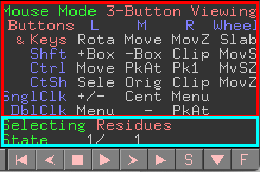
<p>この赤い四角の部分の一番上には<strong>Mouse Mode 3-Button Viewing</strong>と書かれています。これは<strong>3 Button Viewing Mode</strong>と同じ意味です。ここで、赤い四角の範囲のどこかをクリックすると</p>

<p>Mouse Modeが<strong>3-Button Editing</strong>という表示になりました。これは<strong>3 Button Editing Mode</strong>に切り替わったことを表しています。また、青い四角の部分も、<strong>Picking Atoms (and Joints)</strong> に変化しました。最初のうちは、この<strong>Viewing Mode</strong>と<strong>Editing Mode</strong>の2つについて理解しておけば十分だと思います。Lights ModeとAll Modeについては慣れてきたら試してみましょう。2つのモードは上記の赤い四角の部分を押すことで入れ替えることができます。</p>
<p>この画面についてもう少し詳しく見ていきます。ここにはクリックするマウスボタン(L, M, R, Wheel)と補助キーとの組み合わせ(Shift, Ctrl, Ctrl+Shift...)を組み合わせることで、様々なマウス操作が行えることが英語で書かれています(macOSの場合、CtrlはCommand ⌘ キーです)。最上段は対応するキーを押しながらマウスを動かす操作を表しています。例えば、3-Button Viewing Modeにおいては左クリックを押しながらマウスを動かすことで回転操作(Rota)、ミドルクリック（ホイール）を押しながらマウスを動かすことで並進操作(Move)が行えます。ここの表記は簡単なものですが、もし忘れてしまってもここに着目すれば、操作を思い出すことができるでしょう。</p>
<h3 id="各モードにおける操作一覧"><a class="header" href="#各モードにおける操作一覧">各モードにおける操作一覧</a></h3>
<p>各操作の詳細は次項で示します。macOSではCtrlキーはCommandキー(⌘キー)になります。</p>
<p><strong>3 Button Viewing Mode</strong></p>
<table><thead><tr><th align="right"> </th><th align="right">左ボタン</th><th align="right">ホイールボタン</th><th align="right">右ボタン</th><th align="right">ホイールスクロール</th></tr></thead><tbody>
<tr><td align="right">ボタンを押しながらドラッグ</td><td align="right">回転(Rota)</td><td align="right">並進(Move)</td><td align="right">ズームイン・アウト(MovZ)</td><td align="right">スラビング(Slab)</td></tr>
<tr><td align="right">shiftキー</td><td align="right">選択範囲に追加(+Box)</td><td align="right">選択範囲から除去(-Box)</td><td align="right">クリッピング(Clip)</td><td align="right">スラブの移動(MovS)</td></tr>
<tr><td align="right">Ctrlキー</td><td align="right">並進(Move)</td><td align="right">原子ピッキング(PkAt)</td><td align="right">1原子ピッキング(Pk1)</td><td align="right">スラブに対する視点の移動(MvSZ)</td></tr>
<tr><td align="right">Ctrl+Shiftキー</td><td align="right">選択(sele)</td><td align="right">Origin指定(Orig)</td><td align="right">クリッピング(Clip)</td><td align="right">ズームイン・アウト(MovZ)</td></tr>
<tr><td align="right">シングルクリック</td><td align="right">選択範囲追加・除去(+/-)</td><td align="right">センタリング(Cent)</td><td align="right">メニュー表示(Menu)</td><td align="right"> </td></tr>
<tr><td align="right">ダブルクリック</td><td align="right">メニュー表示(Menu)</td><td align="right">-</td><td align="right">原子ピッキング(PkAt)</td><td align="right"> </td></tr>
</tbody></table>
<p><strong>3 Button Editing Mode</strong></p>
<table><thead><tr><th align="right"> </th><th align="right">左ボタン</th><th align="right">ホイールボタン</th><th align="right">右ボタン</th><th align="right">ホイールスクロール</th></tr></thead><tbody>
<tr><td align="right">ボタンを押しながらドラッグ</td><td align="right">回転(Rota)</td><td align="right">並進(Move)</td><td align="right">ズームイン・アウト(MovZ)</td><td align="right">スラビング(Slab)</td></tr>
<tr><td align="right">shiftキー</td><td align="right">オブジェクトの回転(RotO)</td><td align="right">XY軸方向への移動(MovO)</td><td align="right">Z軸方向への移動(MvOZ)</td><td align="right">スラブの移動(MovS)</td></tr>
<tr><td align="right">Ctrlキー</td><td align="right">原子の移動(MovA)</td><td align="right">選択範囲追加・除去(+/-)</td><td align="right">二面角をピッキング(PkTB)</td><td align="right">スラブに対する視点の移動(MvSZ)</td></tr>
<tr><td align="right">Ctrl+Shiftキー</td><td align="right">Z軸方向への移動(MvAZ)</td><td align="right">Origin指定(Orig)</td><td align="right">クリッピング(Clip)</td><td align="right">ズームイン・アウト(MovZ)</td></tr>
<tr><td align="right">シングルクリック</td><td align="right">原子ピッキング(PkAt)</td><td align="right">センタリング(Cent)</td><td align="right">メニュー表示(Menu)</td><td align="right"> </td></tr>
<tr><td align="right">ダブルクリック</td><td align="right">原子の移動(MovA)</td><td align="right">ドラッグモード(DrgM)</td><td align="right">二面角をピッキング(PkTB)</td><td align="right"> </td></tr>
</tbody></table>
<p><strong>2 Button Viewing Mode</strong></p>
<table><thead><tr><th align="right"> </th><th align="right">左ボタン</th><th align="right">ホイールボタン</th><th align="right">右ボタン</th><th align="right">ホイールスクロール</th></tr></thead><tbody>
<tr><td align="right">ボタンを押しながらドラッグ</td><td align="right">回転(Rota)</td><td align="right">--</td><td align="right">ズームイン・アウト(MovZ)</td><td align="right">--</td></tr>
<tr><td align="right">shiftキー</td><td align="right">1原子ピッキング(Pk1)</td><td align="right">--</td><td align="right">クリッピング(Clip)</td><td align="right">--</td></tr>
<tr><td align="right">Ctrlキー</td><td align="right">並進(Move)</td><td align="right">--</td><td align="right">原子ピッキング(PkAt)</td><td align="right">--</td></tr>
<tr><td align="right">Ctrl+Shiftキー</td><td align="right">選択(sele)</td><td align="right">--</td><td align="right">センタリング(Cent)</td><td align="right">--</td></tr>
<tr><td align="right">シングルクリック</td><td align="right">原子ピッキング(PkAt)</td><td align="right">--</td><td align="right">メニュー表示(Menu)</td><td align="right"> </td></tr>
<tr><td align="right">ダブルクリック</td><td align="right">メニュー表示(Menu)</td><td align="right">--</td><td align="right">センタリング(Cent)</td><td align="right"> </td></tr>
</tbody></table>
<h3 id="操作の詳細"><a class="header" href="#操作の詳細">操作の詳細</a></h3>
<h4 id="回転-rota"><a class="header" href="#回転-rota">回転 (Rota)</a></h4>
<p><strong>マウスの左ボタンを押しながらマウスを動かす（ドラッグ）</strong> すると、表示されている分子を回転させることができます。</p>
<video width="100%" height="100%" controls autoplay>
<source src="./image/mouse/rotate.mp4" type="video/mp4">
</video>
<h4 id="並進-move"><a class="header" href="#並進-move">並進 (Move)</a></h4>
<p><strong>マウスのホイールボタンを押しながらドラッグ</strong> すると、表示されている分子を視点に対して平行に移動させることができます。</p>
<video width="100%" height="100%" controls autoplay loop>
<source src="./image/mouse/move.mp4" type="video/mp4">
</video>
<h4 id="ズームインアウト-movz"><a class="header" href="#ズームインアウト-movz">ズームイン・アウト (MovZ)</a></h4>
<p><strong>マウスの右ボタンを押しながらマウスを前後にドラッグ、またはCtrlとShiftキーを押しながらマウスのホイールを上下</strong> させると、分子構造を拡大・縮小することができます。</p>
<video width="100%" height="100%" controls autoplay loop>
<source src="./image/mouse/movz.mp4" type="video/mp4">
</video>
<h4 id="選択--"><a class="header" href="#選択--">選択 (+/-)</a></h4>
<p><strong>表示されているオブジェクトの原子の上でマウスの左ボタンを押す</strong> と、四角のマークが付きます。</p>
<video width="100%" height="100%" controls autoplay loop>
<source src="./image/mouse/select.mp4" type="video/mp4">
</video>
<p>この四角マークは、現在選択されている原子の範囲を示しています。この左クリックによる選択はクリックするたびに選択範囲に追加され、もう一度押すと選択範囲から外されます。</p>
<h4 id="選択範囲に追加除去-box-box"><a class="header" href="#選択範囲に追加除去-box-box">選択範囲に追加/除去 (+Box/-Box)</a></h4>
<p>選択範囲の追加または除去を行います。<strong>+Box(Shiftを押しながらマウスの左クリック＆ドラッグ)</strong> では画面上に黒い四角が現れ、ボタンを離すと、その四角で囲まれた部分が選択範囲に追加されます。反対に、<strong>-Box(Shiftを押しながらマウスのホイールクリック＆ドラッグ)</strong> では四角で囲んだ範囲を選択範囲から除去することができます。同様の操作を繰り返すことも可能です。</p>
<video width="100%" height="100%" controls autoplay loop>
<source src="./image/mouse/plusbox.mp4" type="video/mp4">
</video>
<h4 id="センタリング-cent"><a class="header" href="#センタリング-cent">センタリング (Cent)</a></h4>
<p><strong>表示されているオブジェクトの原子の上でマウスのホイールボタンを押す</strong> と、その原子が画面中央に来るように視点が移動します。また、回転操作の中心もその点に移動します。</p>
<video width="100%" height="100%" controls autoplay loop>
<source src="./image/mouse/center.mp4" type="video/mp4">
</video>
<h4 id="origin指定-orig"><a class="header" href="#origin指定-orig">Origin指定 (Orig)</a></h4>
<p><strong>表示されているオブジェクトの原子の上でCtrlとShiftを押しながらマウスのホイールボタンを押す</strong> と、その原子を回転中心の原点(origin)に指定することができます。上記センタリングのときと異なり、視点は移動しません。</p>
<video width="100%" height="100%" controls autoplay loop>
<source src="./image/mouse/origin.mp4" type="video/mp4">
</video>
<h4 id="メニュー表示-menu"><a class="header" href="#メニュー表示-menu">メニュー表示 (Menu)</a></h4>
<p><strong>マウスの左ボタンをダブルクリック</strong> または <strong>右ボタンをクリック</strong> で、メニューを開きます。メニュー内容はクリックした位置によって内容が変化します。</p>
<p>何もない箇所でクリックすると[Main Pop-Up]メニューが表示されます。<br></p>
<p>オブジェクトの上でクリックすると、クリックした場所に存在する原子についての設定変更を行うメニューが表示されます。<br>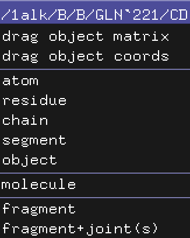</p>
<h4 id="原子ピッキングpkatpk1"><a class="header" href="#原子ピッキングpkatpk1">原子ピッキング（PkAt/Pk1）</a></h4>
<p>オブジェクト上の原子の上で<strong>Ctrlボタンを押しながらホイールクリック</strong>、または<strong>マウス右ボタンのダブルクリック</strong>を行うと、その原子をピッキングした状態になります(<strong>PkAt</strong>)。</p>
<p>このピッキング状態は先述の選択範囲とは異なる選択形式で、図のような球体のマーカーが付きます。このピッキングは画面上に同時に4原子まで選択することができ、各ピッキングマーカーは図のように二重、三重、四重の球体マーカーで示されます。<br>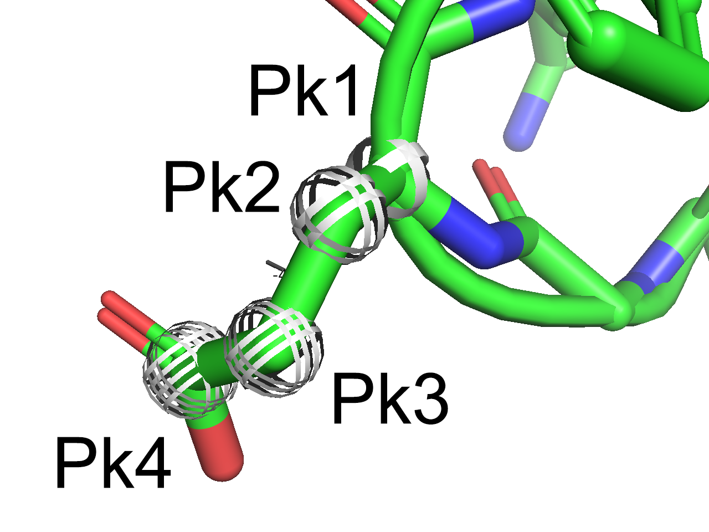</p>
<p><strong>Ctrlボタンを押しながら右クリック (Pk1)</strong> の場合では、上の操作と異なり、1つめの原子ピッキングのみを行います。ピッキングされた原子が2つ、3つ、4つになると、自動でそのピッキングされた原子についての<strong>距離(distance)</strong>、<strong>角度(angle)</strong>、<strong>二面角(dihedral)</strong> を表示してくれます。</p>
<video width="100%" height="100%" controls autoplay loop>
<source src="./image/mouse/pkatom.mp4" type="video/mp4">
</video>
<h4 id="クリッピングclip"><a class="header" href="#クリッピングclip">クリッピング（Clip）</a></h4>
<p>Viewing Modeで<strong>Shiftとマウスの右ボタン（またはCtrl+Shift+マウス右ボタン）を押しながらマウスを上下左右に動かす</strong> と、分子の内部を覗けたり霧をかけたりすることができます。分子内部の一部の領域を強調した画像を取りたいときに作ります。</p>
<p>この機能は2枚の<strong>クリッピング平面（Clipping plane）</strong> によって調節しています。マウスの上下の動きは前面のクリッピング平面(front clipping plane)の位置を、左右の動きは背面のクリッピング平面(rear clipping plane)の位置を調節できます<br>図解<br>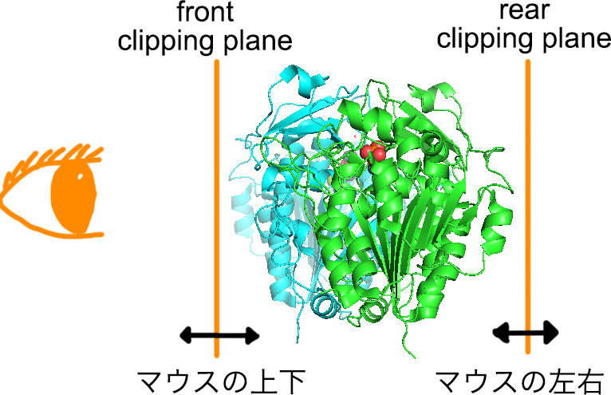<br><strong>画面上にはこの2枚のClipping Planeの間に存在する領域だけが表示されます</strong>。</p>
<p>マウスを画面下に移動させるとfront clipping planeは視点から見て奥へ移動し、分子の内部が見えるようになります。反対に、マウスを上へ移動させると、front clipping planeは手前に移動します。</p>
<video width="100%" height="100%" controls autoplay loop>
<source src="./image/mouse/frontclip.mp4" type="video/mp4">
</video>
<p>マウスを左に移動させるとrear clipping planeが視点から見て奥へ移動します。反対に手前に移動させると、rear clipping planeが手前に移動し、分子の奥側が霧がかかって徐々に見えなくなります。</p>
<video width="100%" height="100%" controls autoplay loop>
<source src="./image/mouse/rearclip.mp4" type="video/mp4">
</video>
<p>霧は画面上部のメニューの[Display]→[Depth Cue(Fogging)]のチェックでON/OFFを選択できます（デフォルトはONです）。<br>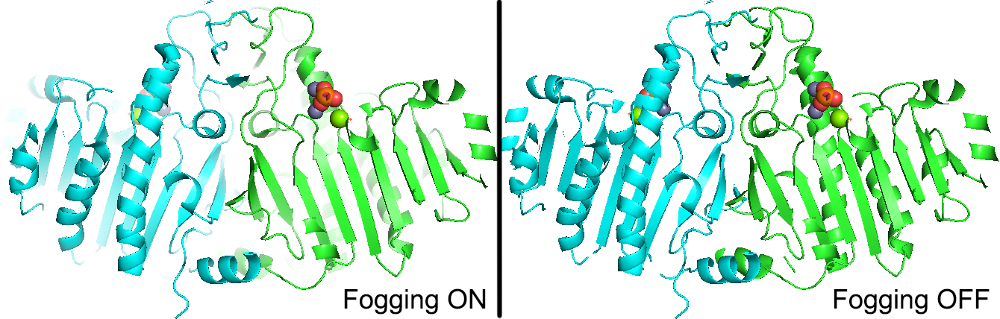</p>
<h4 id="スラビングslab"><a class="header" href="#スラビングslab">スラビング（Slab）</a></h4>
<p>スラブとは英語で厚板、平板という名詞、または「平板にする」という動詞です。PyMOLにおいて<strong>スラブ（Slab、Visible Slabとも）とは、上述の2枚のクリッピング平面の間に挟まれた可視化領域のこと</strong>を指します。</p>
<p>Viewing Modeで<strong>マウスホイールを回転させる</strong> ことで、スラブの厚さを調節することができます。クリッピングとともに、分子構造の内部領域をみたい時に有用です。</p>
<video width="100%" height="100%" controls autoplay loop>
<source src="./image/mouse/slab.mp4" type="video/mp4">
</video>
<p>画面上部メニューの[Display]→[Clip]には[8 Angstroam Slab]を始めとして30 Åまでの厚さのスラブを選ぶことができます。[Nothing]を選択した場合には、全原子が含まれるように自動的にスラブの厚みを調節します。</p>
<h4 id="スラブの移動movs"><a class="header" href="#スラブの移動movs">スラブの移動（MovS）</a></h4>
<p>Viewing Modeで<strong>Shiftを押しながらマウスホイールを回転させる</strong> と、スラブ領域を、その厚みを保ったまま手前・奥に移動させることができます。効果を実感したい場合は、例として[8 Angstroam Slab]設定をした直後に使ってみるとわかりやすいでしょう。</p>
<video width="100%" height="100%" controls autoplay loop>
<source src="./image/mouse/movs.mp4" type="video/mp4">
</video>
<h4 id="スラブに対する視点の移動mvsz"><a class="header" href="#スラブに対する視点の移動mvsz">スラブに対する視点の移動（MvSZ）</a></h4>
<p>Viewing Modeで<strong>Ctrlを押しながらマウスホイールを回転させる</strong> と、スラブ平面に対して視点を移動させることができます。視点がスラブ内部に入ることもできます。</p>
<video width="100%" height="100%" controls autoplay loop>
<source src="./image/mouse/mvsz.mp4" type="video/mp4">
</video>
<h3 id="editing-mode専用コマンド"><a class="header" href="#editing-mode専用コマンド">Editing Mode専用コマンド</a></h3>
<p>以下ではEditing Modeで扱う操作方法について記述します。Editing Modeは<strong>オブジェクト・原子の座標自体に変更を加える</strong>ことが多いため、このモードで操作するときは注意が必要です。<strong>もし誤って座標を動かしてしまった場合、数回であればCtrl-zでUndo（もとに戻す）ことが可能です</strong>。</p>
<h4 id="オブジェクトの回転rotoxy軸方向への移動movoz軸方向への移動mvoz"><a class="header" href="#オブジェクトの回転rotoxy軸方向への移動movoz軸方向への移動mvoz">オブジェクトの回転(RotO)・XY軸方向への移動(MovO)・Z軸方向への移動(MvOZ)</a></h4>
<p>EditingモードでShiftキーとマウスの左ボタン・ホイールボタン・右ボタンを押しながらマウスを移動させることで、オブジェクトの座標に対しそれぞれ回転・XY軸への並進・Z軸へ移動操作を行うことができます。特に、複数のオブジェクトが存在する場合に効果がわかりやすいです。以下の例では緑色と青色で別々のオブジェクトとした上で、青色オブジェクトに対して操作を適用しています。</p>
<video width="100%" height="100%" controls autoplay loop>
<source src="./image/mouse/roto.mp4" type="video/mp4">
</video>
<h4 id="原子の移動movaz軸方向への移動mvaz"><a class="header" href="#原子の移動movaz軸方向への移動mvaz">原子の移動(MovA)・Z軸方向への移動(MvAZ)</a></h4>
<p>EditingモードでCtrlキーとマウスの左ボタンを押しながらマウスを移動させることで、マウスカーソル上に存在する原子の座標を移動させることができます。Ctrl+Shiftキーとマウスの左ボタンを押しながらだとZ軸方向への移動が行えます。下の例では、オレンジ色の原子（リン酸イオンPO4のリン原子）について操作を適用しています。</p>
<video width="100%" height="100%" controls autoplay loop>
<source src="./image/mouse/mova.mp4" type="video/mp4">
</video>
<h4 id="フラグメントの回転rotf移動movfz軸方向への移動mvfz"><a class="header" href="#フラグメントの回転rotf移動movfz軸方向への移動mvfz">フラグメントの回転(RotF)・移動(MovF)・Z軸方向への移動(MvFZ)</a></h4>
<p>Editingモードで特定の原子を左クリックすると原子がピックされた状態になります。このとき操作メニューが変化して、MovF, MvFZが現れるようになります。RotF（Shift+左クリック）とMovF（Shift+ホイールクリック）はピックされた原子と結合している原子のまとまり（<strong>フラグメント</strong>）を回転させたり、平行移動させたりすることができます。この操作は必ず選択されたフラグメントの上でShiftキーとクリック入力を行う必要があります。</p>
<video width="100%" height="100%" controls autoplay loop>
<source src="./image/mouse/movf.mp4" type="video/mp4">
</video>
<p>MvFZ（Shift＋右クリックしながら上下にドラッグ）はピックされたフラグメントを手前または奥に移動させることができます。</p>
<video width="100%" height="100%" controls autoplay loop>
<source src="./image/mouse/mvfz.mp4" type="video/mp4">
</video>
<h4 id="二面角をピッキングpktb"><a class="header" href="#二面角をピッキングpktb">二面角をピッキング(PkTB)</a></h4>
<p>Editingモードで描画されている結合に対してCtrlキーとマウスの右ボタンを押しながら移動させることで、結合の二面角を変更することができます。</p>
<p>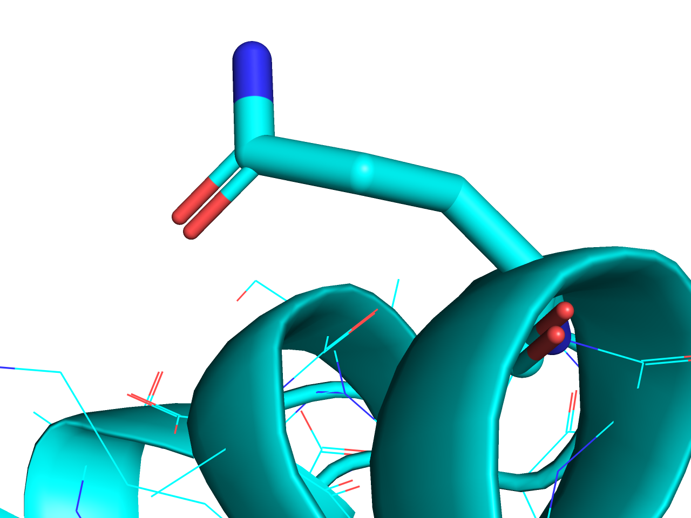　　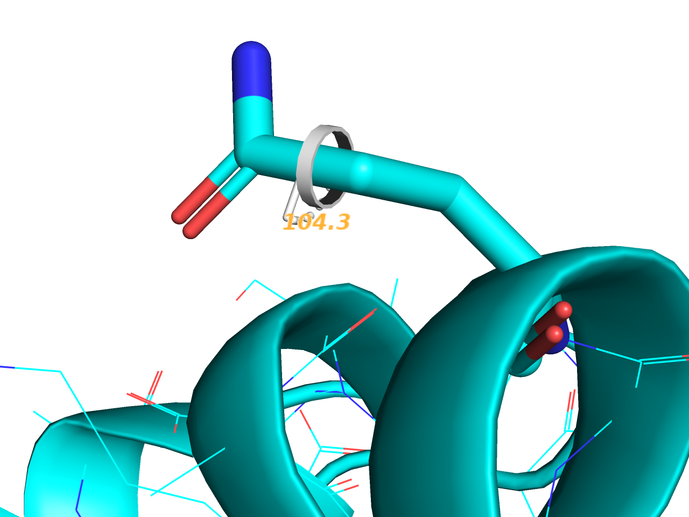</p>
<p>2原子を結ぶ結合線上のうち、それぞれの原子に近い位置で操作を実行することで、それぞれ回転される対象が異なることに注意します。
図において、結合線の左半分にマウスカーソルを置いた状態で操作を適用した場合はこの残基の先端のみが回転します。</p>
<p>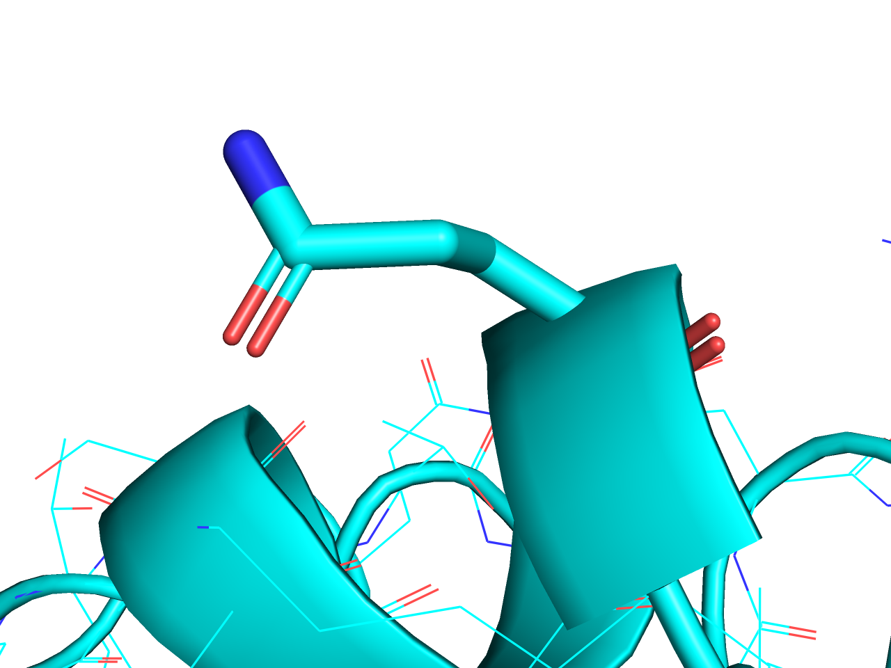　　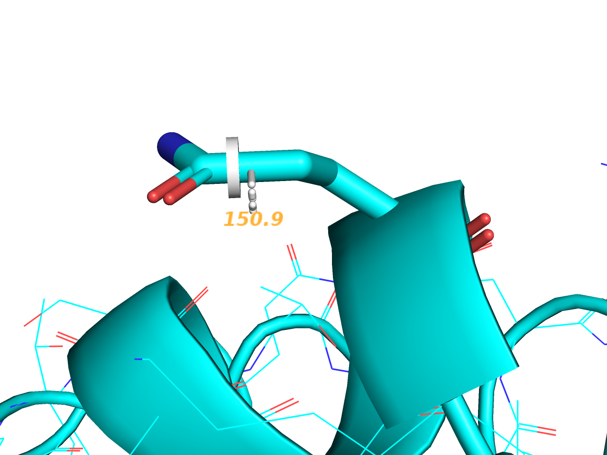</p>
<p>しかし、結合線の右半分にカーソルを置いた状態で操作を適用すると、タンパク質の方が回転します。</p>
<p>　　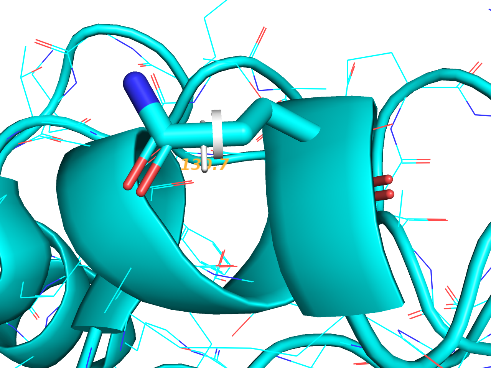</p>
<video width="100%" height="100%" controls autoplay loop>
<source src="./image/mouse/pktb.mp4" type="video/mp4">
</video>
<h4 id="分子構造をドラッグモードにするdrgm"><a class="header" href="#分子構造をドラッグモードにするdrgm">分子構造をドラッグモードにする(DrgM)</a></h4>
<p>Editingモードでホイールボタンをダブルクリックすると、オブジェクト内のひとつながりの分子構造(Molecule)について&quot;drag&quot;状態にします。このドラッグモードではこれまでのカメラ操作のような感覚で分子の座標を変更することが可能になります。</p>
<p>このドラッグモードにするとオブジェクトパネルの下側に専用のメニューが現れます。PDB: 1alkの場合で図の右側の構造についてこの操作を実行すると、Mgイオンを除いた右半分のChainだけが選択された状態になります。これは上述のひとつながりの分子構造に対してのみ適用されるからです。</p>
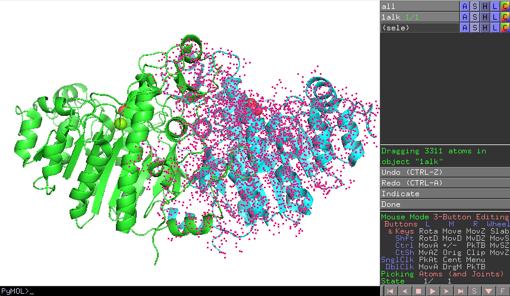
<p>さらに、このドラッグモードではShiftキーを押しながらのマウス操作方法が<strong>RotD</strong>, <strong>MovD</strong>, <strong>MvDZ</strong>に変化します。このDはDraggedを表しており、ドラッグモードとなっている選択範囲のみに対してそれぞれ<strong>回転操作</strong>・<strong>XY軸方向への移動</strong>・<strong>Z軸方向への移動</strong>を行うことができます。</p>
<h1 id="セッションの保存"><a class="header" href="#セッションの保存">セッションの保存</a></h1>
<p><strong>セッション</strong>とは、一連のインタラクティブ操作のことを指します（コンピュータ用語）。PyMOLにおいては、開いてから現在に至るまでの作業記録、と考えることができます。つまり、<strong>セッションの保存</strong>を利用すると作業状態をファイルに保存しておくことができ、あとでその状態を復元することができます。この機能を利用すれば、論文の図を作成している最中に様々な設定を試すことができたり、PyMOLの画面の状態を他の人に表示して確認してもらうということも可能になります。</p>
<p>やり方は簡単で、上部メニューの[<strong>File</strong>]から[<strong>Save Session As...</strong>]を選び、ファイル名を指定してSaveボタンを押して保存するだけです。<br>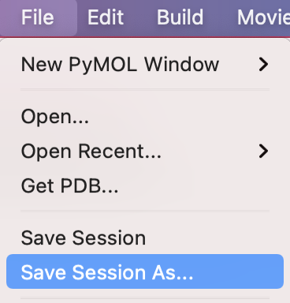</p>
<p>Sessionのファイル形式には<strong>pse</strong>形式と<strong>psw</strong>形式の2つがあります。基本的にはpseファイル形式の方で保存する方がよいでしょう。pswファイルで保存した場合は、そのファイルを開くときに全画面表示が標準になります。例えばデスクトップに<code>foo.pse</code>というファイル名で保存したい場合は以下のように入力して[save]ボタンを押します。<br>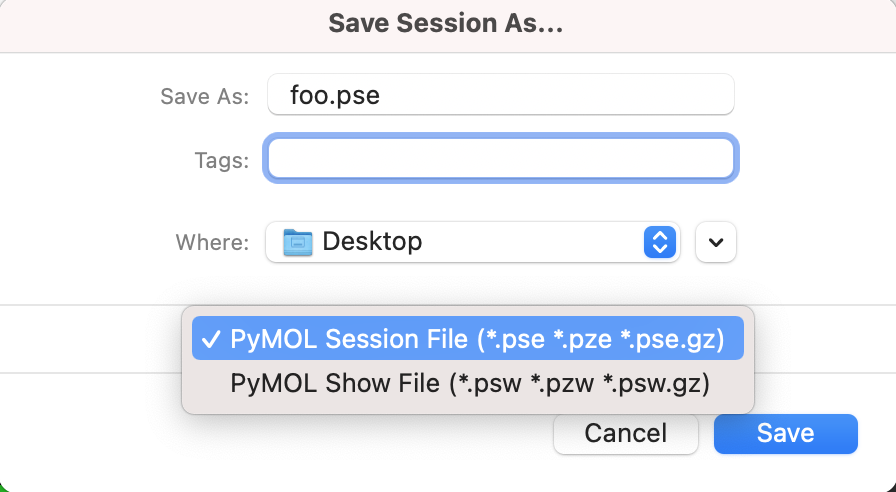</p>
<p>こうして保存されたセッションファイルを再度PyMOLからロードすれば、元の作業状態に戻すことができます。</p>
<p>※ 一度セッションを保存しておけば、以降は[<strong>Save Session</strong>]ボタンを押すことで同名のセッションファイルに上書きしてくれます。</p>
<h1 id="構造ファイルのエクスポート"><a class="header" href="#構造ファイルのエクスポート">構造ファイルのエクスポート</a></h1>
<p>ロードされている構造ファイルの全部または一部を書き出して保存することができます。</p>
<p>上部メニューの[<strong>File</strong>]から[<strong>Export Molecule...</strong>]を選ぶと、保存メニューが現れます。</p>
<p><strong>Selection</strong>の部分はエクスポートする構造オブジェクトの範囲を示しています。<em>enabled</em>は現在オブジェクトパネルで表示をONにしている構造オブジェクトすべてを表します。右のプルダウンメニューには他にも<em>all</em>(ロードしている全構造オブジェクト)や個別の構造ファイルのオブジェクト名が含まれています。</p>
<p><strong>State</strong>は1つのオブジェクトに複数の構造状態を持っている場合に、どの状態を保存するかを表しています。デフォルトは <em>-1 (current)</em> で、現在画面に表示されている状態のものを保存します。</p>
<h2 id="対応している出力ファイル形式"><a class="header" href="#対応している出力ファイル形式">対応している出力ファイル形式</a></h2>
<p>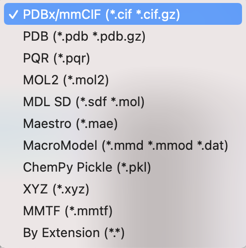<br>
デフォルトでは<code>PDBx/mmCIF (*.cif, *.cif.gz)</code>となっていますが、他にも画像のような様々なファイル形式に出力することができます。</p>
<p>保存メニューには他にも様々なオプションがあります。</p>
<h2 id="generic-options"><a class="header" href="#generic-options">Generic Options</a></h2>
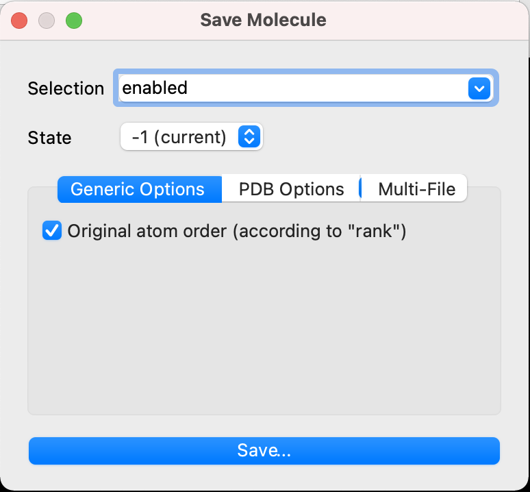
<p><input type="checkbox" checked="checked"> Original atom order (according to &quot;rank&quot;)</p>
<p>構造オブジェクトの保存時に、ATOM行の並び順を元のファイルの入力通りに並べるかどうかを設定します。例として元のファイルが</p>
<pre><code>ATOM      1  CH3 ACE A   1      33.160  24.100  12.400  1.00  0.00
ATOM      2 HH31 ACE A   1      32.860  24.830  11.650  1.00  0.00
ATOM      3 HH32 ACE A   1      33.800  23.390  11.880  1.00  0.00
ATOM      4 HH33 ACE A   1      32.250  23.650  12.770  1.00  0.00
ATOM      5  C   ACE A   1      33.910  24.800  13.510  1.00  0.00
ATOM      6  O   ACE A   1      33.760  24.560  14.700  1.00  0.00
</code></pre>
<p>だったとしたとき、設定がOFFであればこの並び順は</p>
<pre><code>ATOM      1  C   ACE A   1      33.910  24.800  13.510  1.00  0.00           C
ATOM      2  O   ACE A   1      33.760  24.560  14.700  1.00  0.00           O
ATOM      3  CH3 ACE A   1      33.160  24.100  12.400  1.00  0.00           C
ATOM      4 HH31 ACE A   1      32.860  24.830  11.650  1.00  0.00           H
ATOM      5 HH32 ACE A   1      33.800  23.390  11.880  1.00  0.00           H
ATOM      6 HH33 ACE A   1      32.250  23.650  12.770  1.00  0.00           H
</code></pre>
<p>という順に書き出されます。この並びは<code>atom identifier</code>順になっています。一方、設定がONであればこの並び順は</p>
<pre><code>ATOM      1  CH3 ACE A   1      33.160  24.100  12.400  1.00  0.00           C
ATOM      2 HH31 ACE A   1      32.860  24.830  11.650  1.00  0.00           H
ATOM      3 HH32 ACE A   1      33.800  23.390  11.880  1.00  0.00           H
ATOM      4 HH33 ACE A   1      32.250  23.650  12.770  1.00  0.00           H
ATOM      5  C   ACE A   1      33.910  24.800  13.510  1.00  0.00           C
ATOM      6  O   ACE A   1      33.760  24.560  14.700  1.00  0.00           O
</code></pre>
<p>のように、元のファイルの原子順に書き出されて保存されます。</p>
<p>コマンドラインでは <code>set retain_order, [0,1]</code>で同様の設定を指定できます（0で無効、1で有効）。</p>
<blockquote>
<p>参考： https://pymolwiki.org/index.php/Retain_order</p>
</blockquote>
<h2 id="pdb-options"><a class="header" href="#pdb-options">PDB Options</a></h2>
<p>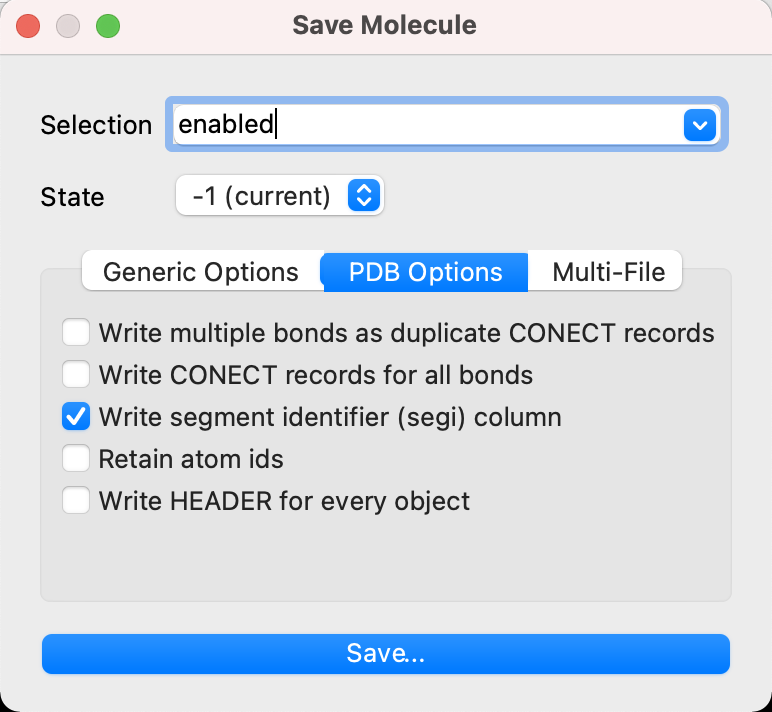<br>
これらのオプションは従来使われていた<code>pdb</code>ファイル形式で出力するときのみ対応します。</p>
<p><input type="checkbox"> Write multiple bonds as duplicate CONECT records</p>
<p>CONECTレコードを複数作成することで原子間の結合次数の情報をエンコードし、ファイルに書き出します。デフォルトではOFFです。ver. 1.6.1から実装されました。</p>
<p>コマンドラインでは <code>set pdb_conect_nodup, [0,1]</code>で無視して保存するかどうかを指定できます（0で書き出す、1で書き出さない）。</p>
<p><input type="checkbox"> Write CONECT records for all bonds</p>
<p>すべての原子間の結合の組み合わせ情報をCONECTレコードに書き出します。デフォルトではOFFです。</p>
<p>コマンドラインでは <code>set pdb_conect_all, [0,1]</code>で同様の設定を指定できます（0で無効、1で有効）。</p>
<blockquote>
<p>参考： https://pymolwiki.org/index.php/Pdb_conect_all</p>
</blockquote>
<p><input type="checkbox" checked="checked"> Write segment identifier (segi) column</p>
<p>segment identifierを書き出すかどうかを指定します。デフォルトではONです。segment identifierとはPDB formatにおいて73-76番目のカラムを利用した識別子のことです。かつて、同一chain IDにありながらある種の原子のグループごとに分けて記述したい場合に用いられましたが、今はChain IDで分けるのが主流となっています。segment identifierは現在廃止された仕様ですが、PyMOLやChimera, CHARMMなど一部のプログラムは未だにこれを利用することができます。</p>
<p>コマンドラインでは <code>set ignore_pdb_segi, [0,1]</code>で無視して保存するかどうかを指定できます（0で書き出す、1で書き出さない）。</p>
<p><input type="checkbox"> Retain atom ids</p>
<p>構造データのエクスポート時に、原子のIDを1から順になるようリナンバリングするかどうかを指定します。デフォルトではOFFです。</p>
<p>コマンドラインでは <code>set pdb_retain_ids, [0,1]</code>で同様の設定を指定できます（0で無効、1で有効）。</p>
<blockquote>
<p>参考： https://pymolwiki.org/index.php/Pdb_retain_ids</p>
</blockquote>
<p><input type="checkbox"> Write HEADER for every object</p>
<p>このオプションを指定すると、保存時に選択された各オブジェクトがHEADERレコード〜ENDレコードで区切られながら1ファイル中にまとめて書き出されます。こうして書き出されたファイルはマルチエントリPDBファイルとなり、PyMOLでこのファイルをロードしようとすると、各エントリごとに異なるオブジェクトとして表示されるようになります。</p>
<p>対称性情報が含まれている場合、CRYST1レコードも記述されます。</p>
<p>内部処理的にはpdb形式で<code>multisave</code>コマンドを使った保存方法に直接対応しています。</p>
<blockquote>
<p>参考： https://pymolwiki.org/index.php/Multisave</p>
</blockquote>
<h2 id="multi-file"><a class="header" href="#multi-file">Multi-File</a></h2>
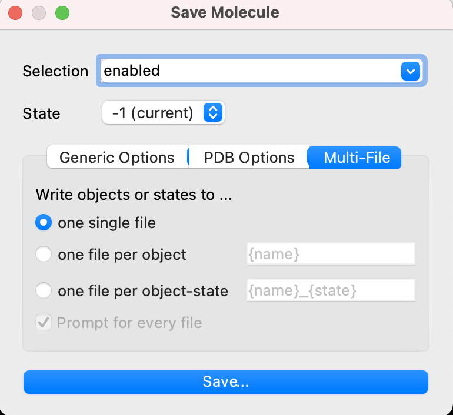
<p>現在PyMOL上で複数表示されているオブジェクトを、複数ファイルに分けてエクスポートしたいときに使うオプションです。さらに、各オブジェクトが2以上のStateを持っている場合（例として、PDB ID:1G03などのNMR構造ファイル、またはMDトラジェクトリをロードしたオブジェクトなど）は、さらにそれらを分割して保存することができます。</p>
<p>デフォルトではone single fileが選択されています。</p>
<p><input type="radio" checked="checked"> one single file
<br>
保存したい対象オブジェクト（上部<code>Selection</code>のところで設定）を1つのファイルにまとめて保存します。保存される対象のStateはメニュー上部の<code>State</code>で変更できます。</p>
<p><input type="radio"> one file per object<br>
複数のオブジェクトが表示されている場合に、各オブジェクトごとにファイルを分割して出力します。デフォルトの出力ファイル名はオブジェクト名に相当する<code>{name}</code>が設定されます。</p>
<p><input type="radio"> one file per object-state<br>
各オブジェクトに複数のstateが存在する場合、上の設定と同様に、<code>{name}_{state}</code>の名前で出力します。</p>
<p><input type="checkbox" checked="checked"> Prompt for every file にチェックが入っている場合は、保存対象ごとにファイル名の指定画面が現れます。例えば、1つのstateを持つAと、20つのstateを持つBのオブジェクトがある場合に<input type="radio" checked="checked"> one file per object-stateを選択すると、21回画面がポップアップすることになります。</p>
<h1 id="画像の保存"><a class="header" href="#画像の保存">画像の保存</a></h1>
<p>PyMOLで表示されている画像を保存することができます。上部メニューの[<strong>File</strong>]から[<strong>Export Image As...</strong>] → [<strong>PNG</strong>]を選ぶと、保存メニューが現れます。</p>
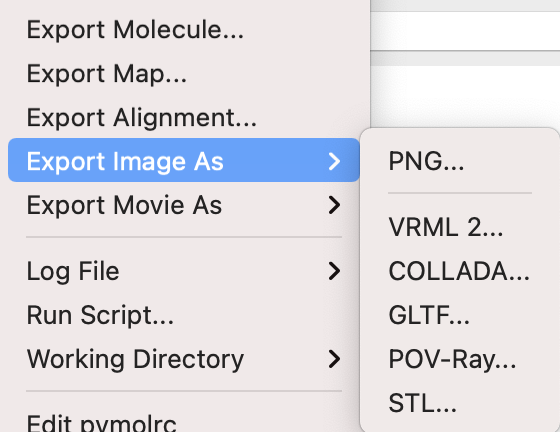
<p>デフォルトでは&quot;capture current display&quot;と表示されています。</p>
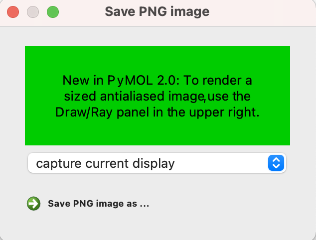
<p>この設定で下にある&quot;Save PNG image as...&quot;を押すと、保存先を指定するメニューが表示され、名前を入れて保存することができます（画像はいずれも<code>bg_color white</code>で白背景にした場合で表示しています）。</p>
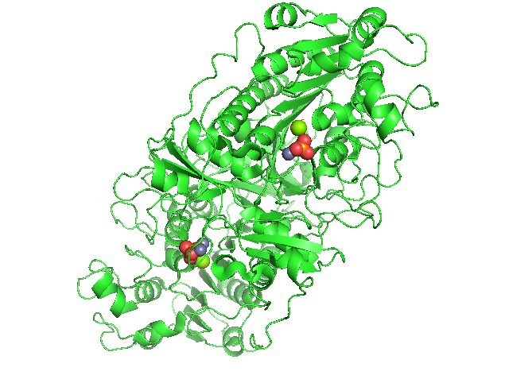
<p>これでとりあえず上のような画像を保存することができましたが、他にも様々なメニューがあるので、状況によって使い分けると良いでしょう。まずは、&quot;capture current display&quot;のプルダウンメニューの部分を押すと、</p>
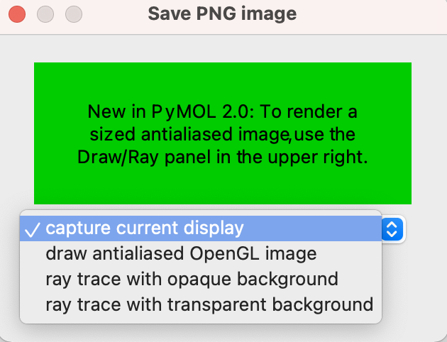
<p>計4つのメニューがあることがわかります。まず&quot;draw antialiased OpenGL image&quot;とすると、描画にアンチエイリアスがかかります（※なおmacOSの場合、現状OpenGL周りの処理にバグがあるためWARNINGSのメッセージが出ています。）</p>
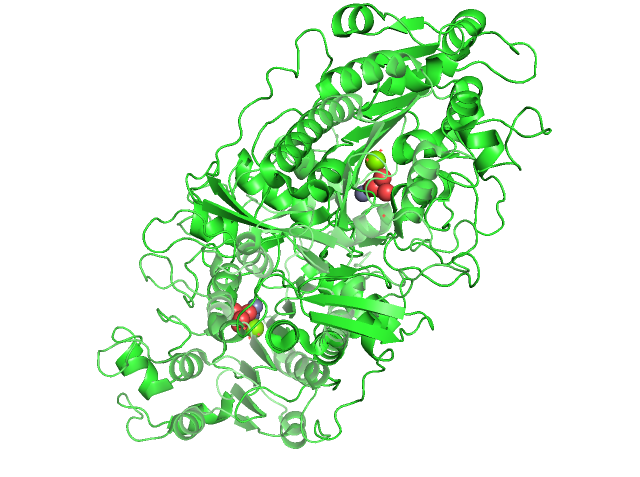
<p>続いて&quot;ray trace with opaque background&quot;とすると、ray traceをかけてオブジェクト全体に陰影をつけながら表示することができます。</p>

<p>最後に、&quot;ray trace with transparent background&quot;では、ray traceによる陰影と背景の透過処理が行われます（下の画像例では市松模様になっていますが、実際に出力される画像ではきちんと背景が透明になっています）。</p>
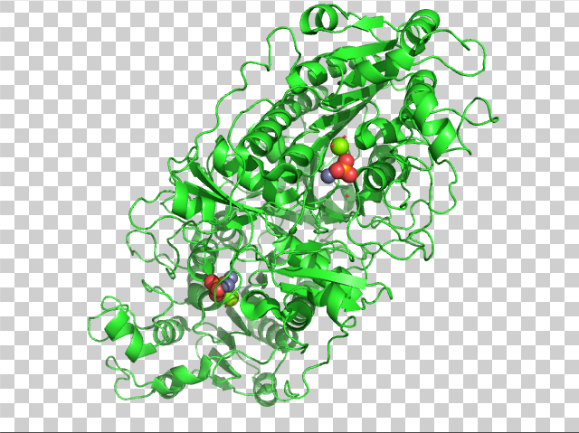
<p>特に最後のオプションで背景を透明化したものは、スライドに画像を載せるときなどで利用することが多いため、覚えておくと良いでしょう。</p>
<p>また、保存時のパネルには&quot;To render a sized antialiased image, use the Draw/Ray panel in the upper right.&quot;というメッセージが表示されていますが、これはPyMOLのGUI部分の右上にあるメニューのことを指しています。</p>

<p>これをクリックすると設定メニューが表示されます。</p>

<p>先述のメニューでは出力される縦と横の画像サイズは指定できませんでしたが、先にここのメニューで縦(Height)と横(Width)の値を目的の値に変更しておけば指定することができます。</p>
<p>Unitsは<code>cm</code>または<code>inch</code>を設定できます。また、DPIはdot per inchのことであり、この値が大きいほど画像の解像度が上がる一方、ファイルサイズは大きくなります。論文誌によっては300 DPIを求められる場合がありますので、発表用のものは<code>300</code>にしておくと良いでしょう。</p>
<p><input type="checkbox" checked="checked"> transparent background (&quot;Ray&quot; only) では、先述の背景の透明化処理の有効・無効を設定できます。</p>
<p>出力は&quot;Draw (fast)&quot;と&quot;Ray (slow)&quot;とありますが、これは先述の&quot;draw antialiased OpenGL image&quot;と&quot;ray trace ~&quot;にそれぞれ対応しています。</p>
<p>コマンドラインで行う場合は、各オプションが以下のコマンドに対応しています。</p>
<table><thead><tr><th>オプション</th><th>コマンド</th></tr></thead><tbody>
<tr><td><em>capture current display</em></td><td><code>png foo.png, 0, 0, -1, ray=0</code></td></tr>
<tr><td><em>draw antialiased OpenGL image</em></td><td><code>draw 0, 0 ; png foo.png, 0, 0, -1, ray=0</code></td></tr>
<tr><td><em>ray trace with opaque background</em></td><td><code>set opaque_background, 1; png foo.png, 0, 0, -1, ray=1</code></td></tr>
<tr><td><em>ray trace with transparent background</em></td><td><code>set opaque_background, 0; png foo.png, 0, 0, -1, ray=1</code></td></tr>
</tbody></table>

                    </main>

                    <nav class="nav-wrapper" aria-label="Page navigation">
                        <!-- Mobile navigation buttons -->
                        
                            <a rel="prev" href="../ch01/qmmm.html" class="mobile-nav-chapters previous" title="Previous chapter" aria-label="Previous chapter" aria-keyshortcuts="Left">
                                <i class="fa fa-angle-left"></i>
                            </a>
                        

                        
                            <a rel="next" href="../ch02/loadmol.html" class="mobile-nav-chapters next" title="Next chapter" aria-label="Next chapter" aria-keyshortcuts="Right">
                                <i class="fa fa-angle-right"></i>
                            </a>
                        

                        <div style="clear: both"></div>
                    </nav>
                </div>
            </div>

            <nav class="nav-wide-wrapper" aria-label="Page navigation">
                
                    <a href="../ch01/qmmm.html" class="nav-chapters previous" title="Previous chapter" aria-label="Previous chapter" aria-keyshortcuts="Left">
                        <i class="fa fa-angle-left"></i>
                    </a>
                

                
                    <a href="../ch02/loadmol.html" class="nav-chapters next" title="Next chapter" aria-label="Next chapter" aria-keyshortcuts="Right">
                        <i class="fa fa-angle-right"></i>
                    </a>
                
            </nav>

        </div>

        
        <!-- Livereload script (if served using the cli tool) -->
        <script type="text/javascript">
            var socket = new WebSocket("ws://localhost:3000/__livereload");
            socket.onmessage = function (event) {
                if (event.data === "reload") {
                    socket.close();
                    location.reload(true); // force reload from server (not from cache)
                }
            };

            window.onbeforeunload = function() {
                socket.close();
            }
        </script>
        

        

        

        
        <script src="../elasticlunr.min.js" type="text/javascript" charset="utf-8"></script>
        <script src="../mark.min.js" type="text/javascript" charset="utf-8"></script>
        <script src="../searcher.js" type="text/javascript" charset="utf-8"></script>
        

        <script src="../clipboard.min.js" type="text/javascript" charset="utf-8"></script>
        <script src="../highlight.js" type="text/javascript" charset="utf-8"></script>
        <script src="../book.js" type="text/javascript" charset="utf-8"></script>

        <!-- Custom JS scripts -->
        

        

    </body>
</html>
